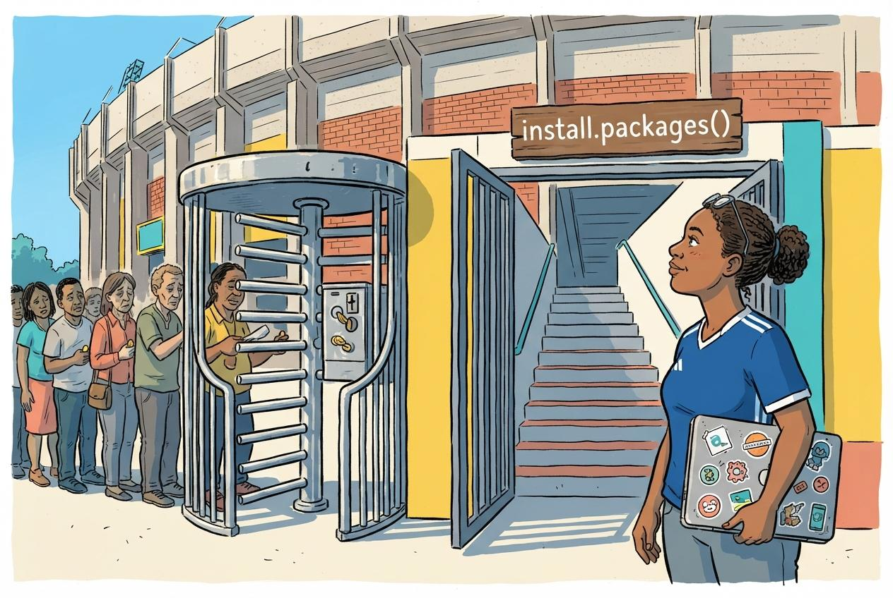
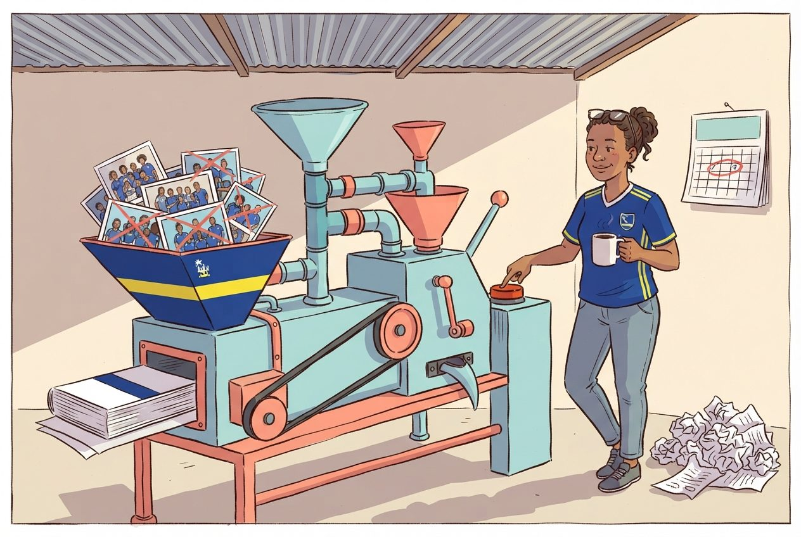
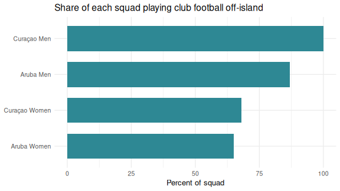
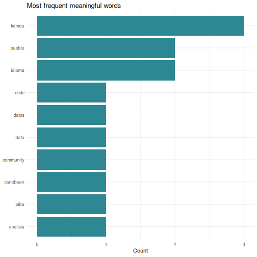

All in One View
Content from The Case for Switching
Last updated on 2026-09-09 | Edit this page
Estimated time: 35 minutes
Overview
Questions
- Why should I switch from SPSS to R?
- What can R do that SPSS cannot?
- How much does SPSS actually cost compared to R?
Objectives
- Describe the practical advantages of R over SPSS for research
- See live examples of R capabilities that go beyond SPSS
- Understand the cost and reproducibility arguments for switching

Introduction
This episode is a motivational opening. You will not write any code yourself yet. Sit back and watch the instructor demonstrate what R can do. By the end you should have a clear picture of why learning R is worth the investment of your time.
The question the course is built around
Curaçao has about 149,000 residents. In 2026 it put a national team into the World Cup, unbeaten through CONCACAF qualifying. Of the 26 players in that squad, not one plays club football on the island. They are spread across ten countries.
That is a striking fact, and it is a data fact before it is a football fact. Where do the players actually play? How does the men’s squad compare with the women’s, and how does Curaçao compare with Aruba, which has a similar history and builds its squad differently? Every one of those questions is a table, a filter, a group summary, and a chart. By the end of Wednesday morning you will be answering them yourself, from a script you wrote.
What you will be able to produce
The instructor will show you a finished squad report: a single R Markdown file that reads the squad data, computes the numbers, draws the charts, and renders to a polished document. It is the kind of thing that ordinarily takes an afternoon of copy-paste between Excel, SPSS output, and Word. Here it is one file and one click, and when the squad changes you rerun it.
In Episode 6 you will build a smaller version of the same thing yourself.
What you will see
The instructor will demonstrate four things that are impossible or impractical in SPSS:
- Pulling a live research dataset, the DCDC Network’s small-island reference list, maintained on GitHub at the University of Aruba, straight into R with no browser involved.
- Creating a publication-quality chart in under 10 lines of code.
- A reproducible report that updates automatically when new data arrives.
- An interactive dashboard built entirely in R.
If any of those sound appealing, you are in the right place.
The cost argument
Let us start with the most concrete reason. SPSS is expensive, especially for small island institutions that pay per seat.
| SPSS Standard | R + RStudio | |
|---|---|---|
| License type | Annual subscription | Free, open-source |
| Cost per user per year | USD 1,170 to 5,730 (varies by tier) | USD 0 |
| 5-year cost for 5 users | USD 29,250 to 143,250 | USD 0 |
| Runs on | Windows, Mac | Windows, Mac, Linux, cloud |
| Updates | Paid upgrades | Continuous, free |
For a university department in the Dutch Caribbean with three SPSS licenses, that is easily ANG 10,000 or more per year that could go to research funding, student assistants, or conference travel instead.
“But my institution already pays for SPSS”
That is true today. Institutional budgets change, and when you graduate or change jobs your personal SPSS license disappears. R stays with you: on your laptop, on a cloud server, on a Raspberry Pi if you want. Your scripts will still run in 10 years.
What R gives you that SPSS does not
Reproducibility
In SPSS a typical workflow looks like this: open a dataset, click through menus, copy output into Word, repeat. If your supervisor asks “can you re-run this with the updated data?”, you have to remember every click.
In R your entire analysis lives in a script. You change one line, the file path, and re-run. Every step is documented.
Packages
SPSS has a fixed set of procedures. R has over 20,000 add-on packages on CRAN alone, covering everything from Bayesian statistics to text mining to geographic mapping. If a method exists, there is probably an R package for it.
Automation
Need to run the same analysis on 50 files? In SPSS that means 50 times through the menus, or learning SPSS syntax, which few people do. In R it is a three-line loop.
Live demonstration
The instructor will now run a live demonstration. Watch the screen.
What is happening on screen
Do not worry about understanding the code right now. The goal is to see what is possible. You will learn the building blocks starting in the next episode.
This is the complete script to run live. Practice this before
the workshop. Make sure tidyverse is installed.
Everything the demo needs comes with it.
The demo has two halves. The first shows R reaching out to a live research dataset the network owns. The second lands the local hook on the squad data the rest of the course uses. Run the first if the Wi-Fi is cooperating, and the second regardless, because the second is the one that makes the room lean forward.
Part A, step 1: Frame the source before you type
Before the first keystroke, name what the room is about to see. The
CSV about to load is in a GitHub repository maintained at the University
of Aruba, island-research-reference-data, part of the DCDC
Network’s shared infrastructure for island research. It is not a
third-party service you hope stays up. It is research data the network
owns and curates. That framing matters. The payoff is not just that R
can read a URL. It is that the data layer underneath belongs to us.
Part A, step 2: Pull the SIDS reference list
Open a new R script in RStudio and type or paste the following. Run it line by line so participants can watch each step.
R
# Load packages (install tidyverse once, before the workshop)
# install.packages("tidyverse")
library(tidyverse)
# Pull the UA island-research reference list straight from GitHub
countries <- read_csv(
"https://raw.githubusercontent.com/University-of-Aruba/island-research-reference-data/main/countries/countries_reference_xlsform.csv"
)
# Quick look at what we got
head(countries)
Pause. Point out: “No browser. No download dialog. No save-as. The file is now a live object in my session, with over a dozen columns per country.”
Part A, step 3: Filter to SIDS and chart by region
R
countries |>
filter(is_sids == 1) |>
count(wb_region) |>
ggplot(aes(x = reorder(wb_region, n), y = n)) +
geom_col(fill = "#44759e") +
coord_flip() +
labs(
title = "Small island developing states by World Bank region",
x = NULL,
y = "Number of SIDS"
) +
theme_minimal(base_size = 14)
Pause again. Key talking points:
- “This chart is ready for a report as it stands. Title, axis labels, colour, proportions, all set in code.”
- “If the UA team adds a country to the reference list tomorrow, I re-run this script and the chart updates. No re-click, no re-export.”
- “Every editorial choice, what counts as a SIDS and which region goes where, is traceable, because the definitions sit in the source CSV you just pulled.”
Part B: the local hook
This is the moment the course earns the room’s attention. Load the squad data and answer the question the island already argues about.
R
squad <- read_csv("data/blue_wave_squad.csv")
squad |>
filter(team_code == "CUW-M") |>
count(club_country, sort = TRUE)
Read the result out loud. Then draw it:
R
squad |>
mutate(
island = if_else(str_starts(team_code, "CUW"), "Curaçao", "Aruba"),
home_code = if_else(str_starts(team_code, "CUW"), "CUW", "ABW"),
region = case_when(
club_country == "X" ~ "Unknown",
club_country == home_code ~ "Home island",
club_country == "NLD" ~ "Netherlands",
club_country == "USA" ~ "North America",
club_country %in% c("GBR", "GRC", "TUR", "DEU", "BEL", "CHE", "XKX") ~ "Rest of Europe",
.default = "Rest of world"
)
) |>
count(island, region) |>
ggplot(aes(x = island, y = n, fill = region)) +
geom_col(position = "fill") +
scale_y_continuous(labels = scales::percent) +
labs(
title = "Where the players actually play",
subtitle = "All four ABC island national squads, 2026",
x = NULL, y = NULL, fill = NULL
) +
theme_minimal(base_size = 14)
Talking point: “Two islands, 80 kilometres apart, with populations and colonial histories that track each other closely. Both send most of their players abroad. But look where. Curaçao’s are scattered across ten countries. Aruba’s are overwhelmingly in one. Nobody in this room needed a statistician to care about that question. What you needed was a way to ask it, and you just watched it take twelve lines.”
Do not resolve the question. Let the room argue. Say: “By Wednesday you will be able to run this yourself, and change it to ask what you actually want to know.”
Step 4: Show the contrast with SPSS
Ask the audience: “How would you have done this in SPSS?”
Walk through it slowly. Make it sting a little. This is the moment the cost of the current workflow lands.
- Go looking for the squad lists. Wikipedia? FotMob? The federation’s Facebook page? Pick one and hope it is current.
- Copy 94 player names, clubs, and positions into Excel by hand. An hour if you are quick and do not lose concentration.
- Discover that the club’s country is only shown as a little flag you cannot copy, that two players have no club listed at all, and that Jong Holland is a Curaçao club despite the name. Clean by hand.
- Import into SPSS. Recode club country into a grouping variable, because the raw text is unusable as it stands.
- Analyze > Descriptive Statistics > Frequencies. Copy the output table.
- Graphs > Chart Builder, drag variables, format the chart, copy, paste into Word.
Then say: “That is half a morning, on a good day. In R it was twelve lines and ten seconds, and the next person who asks gets the same answer from the same file.”
Backup plan
If the Wi-Fi is unreliable, the reference list is saved locally at
episodes/data/countries_backup.csv. Swap the
read_csv() call for the local path:
R
countries <- read_csv("data/countries_backup.csv")
Then proceed with the
filter() |> count() |> ggplot() pipeline as normal.
Part B is local already and needs no network at all, which is why it is
the half you never skip.
Summary
You have now seen R:
- Pull live data from the internet with a single function call
- Create a publication-ready chart in 10 lines of code
- Answer a question about your own island from a dataset you can inspect
- Do all of it in a way that is fully reproducible
Starting in the next episode you will learn to do these things yourself, one step at a time.
- R is free, open-source, and runs on any operating system
- R scripts make your analysis fully reproducible
- R can pull data from APIs, create interactive visualizations, and automate reports, which SPSS cannot do
- Switching builds on your existing statistical knowledge rather than replacing it
Content from Your First R Session
Last updated on 2026-09-09 | Edit this page
Estimated time: 65 minutes
Overview
Questions
- How does RStudio compare to the SPSS interface?
- How do I import data, including SPSS
.savfiles? - How do I get descriptive statistics and frequency tables in R?
Objectives
- Navigate the RStudio interface and identify the equivalent of SPSS panels
- Import CSV, Excel, and SPSS
.savfiles into R - Run basic descriptive statistics and frequency tables
- Inspect variables and data structure

RStudio orientation
When you open RStudio for the first time, you see four panes. If you have used SPSS before, each one has a rough equivalent:
| RStudio pane | Location | SPSS equivalent | What it does |
|---|---|---|---|
| Source Editor | Top-left | Syntax Editor | Where you write and save your code (scripts) |
| Console | Bottom-left | Output Viewer | Where R runs commands and prints results |
| Environment | Top-right | Data View header | Lists all objects (datasets, values) currently in memory |
| Files / Plots / Help | Bottom-right | (no equivalent) | File browser, plot preview, and built-in documentation |
The key difference from SPSS: in SPSS you usually have one dataset open at a time and interact through menus. In RStudio you write instructions in the Source Editor (top-left), send them to the Console (bottom-left), and the results appear either in the Console or the Plots pane.
The Source Editor is your new best friend
In SPSS many users never open the Syntax Editor and click menus instead. In R the Source Editor is how you work. Think of it as a recipe: you write the steps once, and you or anyone else can re-run them at any time.
Save your scripts with the .R extension. Three reasons
you will thank yourself later. RStudio recognises .R files
and turns on syntax highlighting, error checking, and the Run button.
Version control systems like Git track changes line by line in
.R files but treat other formats as opaque blobs. And when
a colleague opens the file in six months, the extension tells them
immediately that this is R code, not a Word document or a loose text
file. The extension is small. The habit pays for itself the first time
you come back to your own work.
Objects and assignment
In SPSS, when you compute a new variable it appears as a column in your dataset. In R everything you create is stored as a named object.
You create objects with the assignment operator
<-, a less-than sign followed by a hyphen. Read it as
“gets” or “is assigned”.
R
# Store a number
population <- 148925
# Store text (called a "character string" in R)
island <- "Curaçao"
# Store the result of a calculation
density <- population / 444 # Curaçao is about 444 km²
To see the value of an object, type its name and run it:
R
population
OUTPUT
[1] 148925R
island
OUTPUT
[1] "Curaçao"R
density
OUTPUT
[1] 335.4167Why <- and not
=?
You will see some people use = for assignment, and it
works in most cases. The R community convention is <-.
It makes your code easier to read because = is also used
inside function arguments, as you will see shortly.
In RStudio the keyboard shortcut Alt + - (Alt and
the minus key) types <- for you automatically.
Functions: R’s version of menu clicks
In SPSS you click Analyze > Descriptive Statistics > Descriptives and a dialog box appears. In R you call a function instead. A function has a name, and you pass it arguments inside parentheses.
R
# round() is a function. The number is the input, digits = 1 is an option.
round(335.417, digits = 1)
OUTPUT
[1] 335.4R
# sqrt() calculates a square root
sqrt(density)
OUTPUT
[1] 18.31438The pattern is always
function_name(argument1, argument2, ...). This is the R
equivalent of filling in an SPSS dialog box: the function name is the
menu item, and the arguments are the fields you would fill in.
Packages: extending R
R comes with many built-in functions, but its real power comes from packages, add-on libraries written by other users. Think of them as SPSS modules, except they are free.
There are two steps:
- Install the package (once per computer, like installing an app):
R
install.packages("tidyverse")
- Load the package (once per session, like opening an app):
R
library(tidyverse)
OUTPUT
── Attaching core tidyverse packages ──────────────────────── tidyverse 2.0.0 ──
✔ dplyr 1.2.1 ✔ readr 2.2.0
✔ forcats 1.0.1 ✔ stringr 1.6.0
✔ ggplot2 4.0.3 ✔ tibble 3.3.1
✔ lubridate 1.9.5 ✔ tidyr 1.3.2
✔ purrr 1.2.2
── Conflicts ────────────────────────────────────────── tidyverse_conflicts() ──
✖ dplyr::filter() masks stats::filter()
✖ dplyr::lag() masks stats::lag()
ℹ Use the conflicted package (<http://conflicted.r-lib.org/>) to force all conflicts to become errors
install.packages() vs
library()
A common source of confusion for beginners:
-
install.packages("tidyverse")downloads and installs the package. You only need to do this once, or when you want to update. Note the quotation marks. -
library(tidyverse)loads a package that is already installed so you can use it in your current session. You do this every time you start R. No quotation marks needed, though they work too.
Analogy: install.packages() is buying a book and putting
it on your shelf. library() is taking the book off the
shelf and opening it.
Importing data
Before you import, set up your workshop folder
R can read a file from the internet, and we saw that in Episode 1. In daily work you will more often read from a file that already lives on your computer, on a shared drive, in a project folder, next to your script. We will do that here.
Three short steps, and then every read_csv() line in the
rest of the course will just work.
1. Download the course datasets. Later in this episode we compare loading the same data from a CSV, an Excel file, and an SPSS file. Download all three now. Open each link in your browser and click the Download raw file button near the top right of the preview:
- blue_wave_squad.csv the plain-text version, one flat table
-
blue_wave_squad.xlsx
the Excel version, with two sheets,
curacaoandaruba - blue_wave_squad.sav the SPSS version, so you can prove to yourself that R opens your existing files
Do not open the CSV in Excel and re-save. That can silently change the encoding and it will mangle the ç in Curaçao. Just save the files as they are.
2. Create an RStudio project. In RStudio go to
File → New Project → New Directory → New Project. Name
the directory blue-wave and save it somewhere you can find
again. Your Documents folder or Desktop is fine. RStudio will open a
fresh session with this folder as its working directory.
3. Put the files where R expects to find them.
Inside your blue-wave project folder, create a subfolder
called data, lower case, no spaces. Move the three
downloaded files into it. Your structure should look like this:
blue-wave/
├── blue-wave.Rproj
└── data/
├── blue_wave_squad.csv
├── blue_wave_squad.xlsx
└── blue_wave_squad.savIn RStudio’s Files pane, bottom-right, click into the
data folder. If you see blue_wave_squad.csv,
you are ready. Green sticky note.
Why a project folder?
A project folder answers the single most common beginner error in R:
“R cannot find my file.” The file path
"data/blue_wave_squad.csv" is read relative to R’s current
working directory. When you open a project, RStudio automatically sets
the working directory to the project folder, so the path works. Without
a project, R’s working directory could be anywhere, usually somewhere
unhelpful like your Documents folder, and the file is not found.
Projects also keep scripts, data, and outputs organised in one place you can hand to a colleague or archive at the end of a study.
What is in the data
The dataset is the player-level squad list for four Dutch Caribbean national teams: Curaçao men and women, Aruba men and women. One row is one player, 94 in total. It was scraped from the current-squad tables on Wikipedia, which means it has the gaps and inconsistencies real data has. That is deliberate. Clean textbook data teaches you nothing about the afternoon you will actually spend with your own file.
| Variable | What it holds |
|---|---|
team_code |
CUW-M, CUW-W, ARU-M,
ARU-W
|
player_name |
Player name |
position |
GK, DEF, MID,
FWD
|
club |
Club name, or unknown
|
club_country |
ISO 3-letter country code of the club, X where it could
not be established |
Five columns is all you get. Everything else this course does with the data, which island, which gender, whether a player is based abroad, which part of the world they play in, you will build yourself out of these five. That is the job.
CSV files with read_csv()
The most common data format in R is CSV, comma-separated values. The
readr package, loaded as part of tidyverse,
provides read_csv():
R
squad <- read_csv("data/blue_wave_squad.csv")
OUTPUT
Rows: 94 Columns: 5
── Column specification ────────────────────────────────────────────────────────
Delimiter: ","
chr (5): team_code, player_name, position, club, club_country
ℹ Use `spec()` to retrieve the full column specification for this data.
ℹ Specify the column types or set `show_col_types = FALSE` to quiet this message.R prints a summary of the column types it detected. This is equivalent to opening a CSV in SPSS via File > Open > Data and checking the variable types.
SPSS .sav files with haven
If you have existing SPSS datasets, the haven package
reads them directly, including variable labels and value labels:
R
# install.packages("haven") # run once if needed
library(haven)
squad_spss <- read_sav("data/blue_wave_squad.sav")
head(squad_spss)
OUTPUT
# A tibble: 6 × 5
team_code player_name position club club_country
<chr> <chr> <chr> <chr> <chr>
1 ARU-M Bradley Martis DEF IJsselmeervogels NLD
2 ARU-M Darryl Bäly DEF Lisse NLD
3 ARU-M Diederick Luydens DEF Dakota ABW
4 ARU-M Gladwin Curiel DEF FC Prishtina XKX
5 ARU-M Kymani Nedd DEF VV Zwaluwen NLD
6 ARU-M Nickenson Paul DEF Dakota ABW Look at that output. It is the same data, and nothing was converted or exported to get it there. R reads your existing SPSS files as they are.
Excel files with readxl
Many datasets arrive as Excel files, .xlsx or
.xls, especially from government agencies and international
organisations. In SPSS you would import these through File >
Open > Data and select the Excel file type from the
dropdown. In R the readxl package handles this.
R
# Iteration: 1
# Install once if needed
install.packages("readxl")
R
# Iteration: 1
library(readxl)
# Basic import, reads the first sheet by default
squad_xl <- read_excel("data/blue_wave_squad.xlsx")
If your Excel file has multiple sheets, use the sheet
argument to specify which one you want, either by name or by
position:
R
# Iteration: 1
# By sheet name
curacao <- read_excel("data/blue_wave_squad.xlsx", sheet = "curacao")
# By position (second sheet)
aruba <- read_excel("data/blue_wave_squad.xlsx", sheet = 2)
You can also read a specific cell range with the range
argument, which is useful when the data does not start at cell A1:
R
# Iteration: 1
# Read only cells B2 through F50
subset <- read_excel("data/blue_wave_squad.xlsx", range = "B2:F50")
read_excel() vs
read_csv(), when to use which
If you have a choice, CSV is simpler: plain text, lightweight, and
free of formatting surprises. Use read_excel() when you
receive data in Excel format and do not want to export it to CSV by hand
first, or when the file contains multiple sheets you need to reach
programmatically.
Unlike read_csv(), read_excel() is not part
of the tidyverse. You need to install and load readxl
separately.
Challenge: Import from Excel
The Excel file has two sheets, curacao and
aruba.
- Write the code to load the
readxlpackage. - Write the code to read the
arubasheet into an object calledaruba_squad. - How would you check how many rows and columns
aruba_squadhas?
R
# Iteration: 1
# 1: Load the package
library(readxl)
# 2: Read the aruba sheet
aruba_squad <- read_excel("data/blue_wave_squad.xlsx", sheet = "aruba")
# 3: Check dimensions
dim(aruba_squad)
OUTPUT
[1] 46 5R
# Or: glimpse(aruba_squad)
Exploring your data
Now that we have the squad dataset loaded, let us
explore it. Each of the functions below is the R equivalent of something
you would do in SPSS.
View(), the Data View equivalent
R
View(squad)
This opens a spreadsheet-like viewer in RStudio, just like SPSS Data View. You can scroll, sort columns by clicking headers, and filter. Note the capital V.
head(), see the first few rows
R
head(squad)
OUTPUT
# A tibble: 6 × 5
team_code player_name position club club_country
<chr> <chr> <chr> <chr> <chr>
1 ARU-M Bradley Martis DEF IJsselmeervogels NLD
2 ARU-M Darryl Bäly DEF Lisse NLD
3 ARU-M Diederick Luydens DEF Dakota ABW
4 ARU-M Gladwin Curiel DEF FC Prishtina XKX
5 ARU-M Kymani Nedd DEF VV Zwaluwen NLD
6 ARU-M Nickenson Paul DEF Dakota ABW This is faster than View() when you just want a quick
look. By default it shows 6 rows. You can change that with
head(squad, n = 10).
str(), the Variable View equivalent
In SPSS you would switch to Variable View to see
variable names, types, and labels. In R, str() does the
same thing:
R
str(squad)
OUTPUT
spc_tbl_ [94 × 5] (S3: spec_tbl_df/tbl_df/tbl/data.frame)
$ team_code : chr [1:94] "ARU-M" "ARU-M" "ARU-M" "ARU-M" ...
$ player_name : chr [1:94] "Bradley Martis" "Darryl Bäly" "Diederick Luydens" "Gladwin Curiel" ...
$ position : chr [1:94] "DEF" "DEF" "DEF" "DEF" ...
$ club : chr [1:94] "IJsselmeervogels" "Lisse" "Dakota" "FC Prishtina" ...
$ club_country: chr [1:94] "NLD" "NLD" "ABW" "XKX" ...
- attr(*, "spec")=
.. cols(
.. team_code = col_character(),
.. player_name = col_character(),
.. position = col_character(),
.. club = col_character(),
.. club_country = col_character()
.. )
- attr(*, "problems")=<pointer: 0x5595ccadafc0> This tells you how many observations (rows), how many variables
(columns), and the type of each variable: num for numbers,
chr for text.
glimpse(), a tidyverse alternative to
str()
The glimpse() function from dplyr gives
similar information in a tidier format:
R
glimpse(squad)
OUTPUT
Rows: 94
Columns: 5
$ team_code <chr> "ARU-M", "ARU-M", "ARU-M", "ARU-M", "ARU-M", "ARU-M", "AR…
$ player_name <chr> "Bradley Martis", "Darryl Bäly", "Diederick Luydens", "Gl…
$ position <chr> "DEF", "DEF", "DEF", "DEF", "DEF", "DEF", "DEF", "DEF", "…
$ club <chr> "IJsselmeervogels", "Lisse", "Dakota", "FC Prishtina", "V…
$ club_country <chr> "NLD", "NLD", "ABW", "XKX", "NLD", "ABW", "NLD", "NLD", "…
summary(), Descriptives in one command
In SPSS: Analyze > Descriptive Statistics > Descriptives. In R:
R
summary(squad)
OUTPUT
team_code player_name position club club_country
Length :94 Length :94 Length :94 Length :94 Length :94
N.unique : 4 N.unique :94 N.unique : 4 N.unique :71 N.unique :15
N.blank : 0 N.blank : 0 N.blank : 0 N.blank : 0 N.blank : 0
Min.nchar: 5 Min.nchar: 9 Min.nchar: 2 Min.nchar: 3 Min.nchar: 1
Max.nchar: 5 Max.nchar:25 Max.nchar: 3 Max.nchar:31 Max.nchar: 3 For numeric columns you get the minimum, maximum, mean, median, and quartiles. For character columns you get the length and type. Most of this dataset is character, which is normal for squad and survey data, and it is why frequency tables matter more here than means.
table(), frequency tables
In SPSS: Analyze > Descriptive Statistics > Frequencies. In R:
R
table(squad$team_code)
OUTPUT
ARU-M ARU-W CUW-M CUW-W
23 23 26 22 The $ operator extracts a single column from a data
frame. So squad$team_code means “the team_code column from
the squad dataset”, like clicking on a single variable in SPSS.
R
table(squad$position)
OUTPUT
DEF FWD GK MID
30 25 11 28 You can also make two-way frequency tables, which is where this dataset starts to become interesting:
R
table(squad$team_code, squad$club_country)
OUTPUT
ABW BEL CHE CUW DEU GBR GRC ISR MYS NLD SAU TUR USA X XKX
ARU-M 3 0 0 0 1 0 0 0 0 18 0 0 0 0 1
ARU-W 6 0 0 0 0 0 1 0 0 14 0 0 0 2 0
CUW-M 0 1 1 0 0 4 2 1 1 10 1 3 2 0 0
CUW-W 0 0 0 7 1 0 1 0 0 12 0 0 1 0 0Read that table across the rows. CUW-M and
ARU-M are two men’s squads from neighbouring islands. One
is spread thinly across a lot of columns; the other piles up in one.
Hold onto that. Episode 3 is where you learn to interrogate it
properly.
- Spend time on the RStudio pane orientation. Have participants identify each pane on their own screen before moving on.
- The
<-assignment operator trips people up. Give them a few minutes to practice creating objects with different names and values. - When loading tidyverse, the startup messages can be alarming to beginners. Reassure them that the “Attaching packages” and “Conflicts” messages are normal and expected.
- Do the “Before you import” subsection as a
whole-room moment, not as reading. Project the download page, walk
everyone through the browser download, the New Project dialog, and
creating the
datasubfolder. Wait for green sticky notes in the Files pane before typingread_csv(). This is the most common point of failure in the course and it is worth five deliberate minutes up front to avoid twenty scattered minutes of troubleshooting later. - The
.savimport is worth a beat of theatre. Most of the room has years of.savfiles they assume are trapped. Let them see one open in three lines. - Encoding warning is not pedantry. If a participant opens the CSV in Excel and saves it, the ç in Curaçao usually breaks and they will hit an error later that looks unrelated. Say it once, firmly.
- If a participant cannot download (blocked network, locked laptop), have a USB stick or shared-drive copy of the three files ready as fallback.
- The two-way table at the end is a deliberate cliffhanger. Do not explain it. Let someone in the room say it out loud.
Challenge 1: Explore the squad dataset
Import the squad dataset and answer the following using R functions. Write your code in the Source Editor and run each line.
- How many rows and how many columns does the dataset have?
- What data type is the
club_countrycolumn? Does that surprise you? - How many players are in each of the four squads?
- How many players have a club that could not be established?
R
# Load the data (if not already loaded)
library(tidyverse)
squad <- read_csv("data/blue_wave_squad.csv")
OUTPUT
Rows: 94 Columns: 5
── Column specification ────────────────────────────────────────────────────────
Delimiter: ","
chr (5): team_code, player_name, position, club, club_country
ℹ Use `spec()` to retrieve the full column specification for this data.
ℹ Specify the column types or set `show_col_types = FALSE` to quiet this message.Question 1: How many rows and columns?
R
dim(squad)
OUTPUT
[1] 94 594 players and 5 columns.
Question 2: Data type of
club_country?
R
str(squad$club_country)
OUTPUT
chr [1:94] "NLD" "NLD" "ABW" "XKX" "NLD" "ABW" "NLD" "NLD" "NLD" "NLD" ...It is character (chr). Most values are three-letter
country codes, but the column also holds X for the players
whose club nobody could establish. R will not invent a type that fits
only some of the values, and it will not quietly drop the ones that do
not fit. That is the behaviour you want.
Question 3: Players per squad?
R
table(squad$team_code)
OUTPUT
ARU-M ARU-W CUW-M CUW-W
23 23 26 22 Question 4: Players with no established club?
R
sum(squad$club_country == "X")
OUTPUT
[1] 2Two, both in the Aruba women’s squad. Remember them. They come back in Episode 3.
Challenge 2: Practice with objects and functions
- Create an object called
my_islandthat stores the text"Curaçao". - Create an object called
area_km2that stores the value444. - Use the
nchar()function to count the number of characters inmy_island. - Use
nrow()insideround()to work out what percentage of all 94 players are in the Curaçao men’s squad. Hint: you can put one function inside another.
R
# 1 and 2: Create objects
my_island <- "Curaçao"
area_km2 <- 444
# 3: Count characters
nchar(my_island)
OUTPUT
[1] 7R
# 4: Share of players in the Curaçao men's squad
cuw_m <- sum(squad$team_code == "CUW-M")
round(100 * cuw_m / nrow(squad), digits = 1)
OUTPUT
[1] 27.7Nesting functions, putting one inside another, is common in R. R
evaluates from the inside out: first it calculates the division, then it
passes that result to round().
Summary
You have now completed your first hands-on R session. You can find
your way around RStudio, create objects, use functions, install and load
packages, import a CSV, an Excel sheet, and an SPSS file, and inspect
data with View(), head(), str(),
glimpse(), summary(), and
table().
In SPSS terms you have learned the equivalent of opening a dataset, switching between Data View and Variable View, and running Descriptives and Frequencies. The difference is that everything you did is saved in a script you can re-run at any time.
- RStudio is your workspace, combining a script editor, console, and data viewer
-
haven::read_sav()imports SPSS files directly, preserving labels -
readxl::read_excel()reads Excel files and can target a named sheet -
summary(),table(), andstr()replace the Descriptives and Frequencies menus in SPSS - A character column full of number-looking values is R refusing to lie to you about the data
Content from Data Manipulation
Last updated on 2026-09-09 | Edit this page
Estimated time: 60 minutes
Overview
Questions
- How do I filter, sort, and recode data in R the way I do in SPSS?
- What is the tidyverse and why does it matter?
- How do I create new variables from existing ones?
Objectives
- Filter rows, select columns, and sort data using dplyr
- Create new variables and recode existing ones
- Chain operations together using the pipe operator
- Recognize the SPSS menu equivalent for each operation

The tidyverse approach
In SPSS you manipulate data through menus: Data > Select
Cases, Data > Sort Cases, Transform
> Compute Variable, and so on. In R the dplyr
package gives you a set of verbs, functions with
plain-English names that do exactly what they say.
The dplyr package is part of the
tidyverse, which you already loaded in the previous
episode. If you are starting a fresh R session, load it now:
R
library(tidyverse)
OUTPUT
── Attaching core tidyverse packages ──────────────────────── tidyverse 2.0.0 ──
✔ dplyr 1.2.1 ✔ readr 2.2.0
✔ forcats 1.0.1 ✔ stringr 1.6.0
✔ ggplot2 4.0.3 ✔ tibble 3.3.1
✔ lubridate 1.9.5 ✔ tidyr 1.3.2
✔ purrr 1.2.2
── Conflicts ────────────────────────────────────────── tidyverse_conflicts() ──
✖ dplyr::filter() masks stats::filter()
✖ dplyr::lag() masks stats::lag()
ℹ Use the conflicted package (<http://conflicted.r-lib.org/>) to force all conflicts to become errorsR
# Also load our dataset
squad <- read_csv("data/blue_wave_squad.csv")
OUTPUT
Rows: 94 Columns: 5
── Column specification ────────────────────────────────────────────────────────
Delimiter: ","
chr (5): team_code, player_name, position, club, club_country
ℹ Use `spec()` to retrieve the full column specification for this data.
ℹ Specify the column types or set `show_col_types = FALSE` to quiet this message.What is a dependency?
A package in R is a bundle of code that someone else wrote so you do
not have to. tidyverse, for example, is a collection of
packages that work together for data manipulation and visualisation.
When you use library(tidyverse), R loads those packages
into your session so their functions become available.
A dependency is a package that another package needs in order to
work. tidyverse depends on dplyr,
ggplot2, readr, and several others. When you
run install.packages("tidyverse"), R automatically installs
everything it depends on too. You do not have to manage the chain
manually.
Two things this means in practice. First, the first time you install
a package it can take a minute or two because R is pulling down the
dependency chain. That is normal. Second, when you share your script
with a colleague and they get an error like
there is no package called 'dplyr', the fix is almost
always install.packages("tidyverse"), not
install.packages("dplyr"), because the dependency lives
inside the larger package.
We come back to this in Episode 6, reproducible reporting, where recording which packages your script needs is part of making sure it still runs six months from now.
Here is the key idea: every SPSS menu operation you use for data manipulation has a dplyr verb equivalent.
| SPSS menu path | dplyr verb | What it does |
|---|---|---|
| Data > Select Cases | filter() |
Keep rows that match a condition |
| (selecting columns in Variable View) | select() |
Keep or drop columns |
| Transform > Compute Variable | mutate() |
Create or modify a column |
| Transform > Recode into Different Variables | case_when() |
Assign values based on conditions |
| Data > Sort Cases | arrange() |
Sort rows |
| Data > Split File + Aggregate |
group_by() + summarise()
|
Calculate summaries by group |
Let us work through each one.
filter(), Select Cases
In SPSS you would go to Data > Select Cases, click “If condition is satisfied”, and type a condition. In R:
R
curacao_men <- filter(squad, team_code == "CUW-M")
curacao_men
OUTPUT
# A tibble: 26 × 5
team_code player_name position club club_country
<chr> <chr> <chr> <chr> <chr>
1 CUW-M Armando Obispo DEF PSV NLD
2 CUW-M Deveron Fonville DEF NEC NLD
3 CUW-M Joshua Brenet DEF Kayserispor TUR
4 CUW-M Juriën Gaari DEF Abha SAU
5 CUW-M Riechedly Bazoer DEF Konyaspor TUR
6 CUW-M Roshon van Eijma DEF A.E. Kifisia GRC
7 CUW-M Sherel Floranus DEF PEC Zwolle NLD
8 CUW-M Shurandy Sambo DEF Sparta Rotterdam NLD
9 CUW-M Brandley Kuwas FWD Volendam NLD
10 CUW-M Gervane Kastaneer FWD Terengganu MYS
# ℹ 16 more rowsNotice the double equals sign ==. This
is how R tests equality. A single = is for assigning values
to function arguments, like digits = 1. A double
== asks “is this equal to?”.
You can combine conditions. Listing them separated by commas means “and”:
R
# Curaçao men who play in the Netherlands
cuw_nld <- filter(squad, team_code == "CUW-M", club_country == "NLD")
cuw_nld
OUTPUT
# A tibble: 10 × 5
team_code player_name position club club_country
<chr> <chr> <chr> <chr> <chr>
1 CUW-M Armando Obispo DEF PSV NLD
2 CUW-M Deveron Fonville DEF NEC NLD
3 CUW-M Sherel Floranus DEF PEC Zwolle NLD
4 CUW-M Shurandy Sambo DEF Sparta Rotterdam NLD
5 CUW-M Brandley Kuwas FWD Volendam NLD
6 CUW-M Trevor Doornbusch GK VVV-Venlo NLD
7 CUW-M Tyrick Bodak GK Vitesse NLD
8 CUW-M Godfried Roemeratoe MID RKC Waalwijk NLD
9 CUW-M Juninho Bacuna MID Volendam NLD
10 CUW-M Kevin Felida MID Den Bosch NLD R
# Every player in the dataset based on one of the two islands
home_based <- filter(squad, club_country %in% c("CUW", "ABW"))
home_based
OUTPUT
# A tibble: 16 × 5
team_code player_name position club club_country
<chr> <chr> <chr> <chr> <chr>
1 ARU-M Diederick Luydens DEF Dakota ABW
2 ARU-M Nickenson Paul DEF Dakota ABW
3 ARU-M Josthan Maduro GK SV Britannia ABW
4 ARU-W Joyce Chen DEF SV Racing Club ABW
5 ARU-W Sofia Mora DEF SV Bubali ABW
6 ARU-W Zyana Rogers FWD SV Britannia ABW
7 ARU-W Dylana Veenstra GK SV Britannia ABW
8 ARU-W Jennifer Henao MID SV Britannia ABW
9 ARU-W Kim Schoppema MID SV Britannia ABW
10 CUW-W Charnainelys Andrea DEF Excellence CUW
11 CUW-W Ignarda Pieternella DEF Victory Boys CUW
12 CUW-W Ruwenna Cristina DEF UNDEBA CUW
13 CUW-W Gervionna Martina FWD Victory Boys CUW
14 CUW-W Kingnaichely Provence GK Jong Holland CUW
15 CUW-W Thiheyna Susana GK Undeba CUW
16 CUW-W Riesmarly Tokaay MID Victory Boys CUW That last result is worth a pause. Run it and look at which team codes appear.
Common comparison operators
| Operator | Meaning | Example |
|---|---|---|
== |
equal to | position == "GK" |
!= |
not equal to | club_country != "NLD" |
> |
greater than | year > 2020 |
< |
less than | age < 21 |
>= |
greater than or equal to | year >= 2021 |
<= |
less than or equal to | rank <= 100 |
%in% |
matches one of several values | position %in% c("DEF", "MID") |
! |
not | !is.na(club) |
select(), keep or drop columns
Sometimes your dataset has more columns than you need. In SPSS you
might delete variables or simply ignore them. In R,
select() lets you keep only the columns you want:
R
slim <- select(squad, team_code, player_name, position, club_country)
head(slim)
OUTPUT
# A tibble: 6 × 4
team_code player_name position club_country
<chr> <chr> <chr> <chr>
1 ARU-M Bradley Martis DEF NLD
2 ARU-M Darryl Bäly DEF NLD
3 ARU-M Diederick Luydens DEF ABW
4 ARU-M Gladwin Curiel DEF XKX
5 ARU-M Kymani Nedd DEF NLD
6 ARU-M Nickenson Paul DEF ABW You can also drop columns by putting a minus sign in front:
R
no_club <- select(squad, -club)
head(no_club)
OUTPUT
# A tibble: 6 × 4
team_code player_name position club_country
<chr> <chr> <chr> <chr>
1 ARU-M Bradley Martis DEF NLD
2 ARU-M Darryl Bäly DEF NLD
3 ARU-M Diederick Luydens DEF ABW
4 ARU-M Gladwin Curiel DEF XKX
5 ARU-M Kymani Nedd DEF NLD
6 ARU-M Nickenson Paul DEF ABW
mutate(), Compute Variable
In SPSS: Transform > Compute Variable. You would
type a target variable name, then an expression. In R,
mutate() creates a new column, or modifies an existing
one.
Our dataset codes the team as a single string like
CUW-M. That is compact for storage and useless for
analysis. Let us split it into the two things it actually encodes:
R
squad <- mutate(squad,
island = if_else(str_starts(team_code, "CUW"), "Curaçao", "Aruba"),
gender = if_else(str_ends(team_code, "M"), "Men", "Women")
)
head(select(squad, team_code, island, gender, player_name))
OUTPUT
# A tibble: 6 × 4
team_code island gender player_name
<chr> <chr> <chr> <chr>
1 ARU-M Aruba Men Bradley Martis
2 ARU-M Aruba Men Darryl Bäly
3 ARU-M Aruba Men Diederick Luydens
4 ARU-M Aruba Men Gladwin Curiel
5 ARU-M Aruba Men Kymani Nedd
6 ARU-M Aruba Men Nickenson Paul if_else() takes a condition, a value to use when it is
true, and a value to use when it is false. It is the R equivalent of an
SPSS IF transformation.
You can create multiple columns at once, and a logical column is often the most useful thing you can make:
R
squad <- mutate(squad,
based_abroad = !(club_country %in% c("CUW", "ABW", "X")),
club_known = club != "unknown"
)
head(select(squad, player_name, club_country, based_abroad, club_known))
OUTPUT
# A tibble: 6 × 4
player_name club_country based_abroad club_known
<chr> <chr> <lgl> <lgl>
1 Bradley Martis NLD TRUE TRUE
2 Darryl Bäly NLD TRUE TRUE
3 Diederick Luydens ABW FALSE TRUE
4 Gladwin Curiel XKX TRUE TRUE
5 Kymani Nedd NLD TRUE TRUE
6 Nickenson Paul ABW FALSE TRUE Why a TRUE/FALSE column is worth making
R treats TRUE as 1 and FALSE as 0. That
means the mean of a logical column is a proportion.
Once you have based_abroad, the share of a squad playing
abroad is one call to mean(). No recoding into dummy
variables, no counting by hand. This trick will save you more time than
almost anything else in this episode.
The decision we just buried in one line
Look again at how based_abroad was defined. A player
whose club_country is X, meaning nobody could
establish where they play, is being recorded as FALSE, not
abroad. Two players in the Aruba women’s squad are in that position.
Every share we calculate from this column is therefore a little lower
than the truth, and nothing in the output says so.
That is not a bug in R. It is an analytical choice, made in passing, that a reader of your results would never see. The alternative is to say so explicitly:
R
squad <- mutate(squad,
abroad_strict = if_else(club_country == "X", NA, !(club_country %in% c("CUW", "ABW")))
)
# Now R refuses to give you an answer that hides the gap
mean(squad$abroad_strict)
OUTPUT
[1] NAR
# You have to ask for it deliberately, and say how many you dropped
mean(squad$abroad_strict, na.rm = TRUE)
OUTPUT
[1] 0.826087R
sum(is.na(squad$abroad_strict))
OUTPUT
[1] 2NA is R’s marker for “missing”. Most calculations return
NA if any input is missing, which feels obstructive until
you realise it is R declining to invent a number on your behalf.
na.rm = TRUE overrides it, and you should reach for it
consciously and report what it removed.
We use the simpler based_abroad for the rest of this
episode because it keeps the code readable. Now you know what it
costs.
case_when(), Recode into Different Variables
In SPSS: Transform > Recode into Different
Variables, where you map old values to new values. In R you use
case_when() inside mutate().
The club_country column holds fourteen different codes
plus X. For most questions that is too fine-grained: you do
not want a bar chart with fourteen bars, most of them height one. Let us
collapse it into regions:
R
squad <- mutate(squad,
home_code = if_else(island == "Curaçao", "CUW", "ABW"),
region = case_when(
club_country == "X" ~ "Unknown",
club_country == home_code ~ "Home island",
club_country == "NLD" ~ "Netherlands",
club_country == "USA" ~ "North America",
club_country %in% c("GBR", "GRC", "TUR", "DEU", "BEL", "CHE", "XKX") ~ "Rest of Europe",
.default = "Rest of world"
)
)
table(squad$region)
OUTPUT
Home island Netherlands North America Rest of Europe Rest of world
16 54 3 16 3
Unknown
2 The syntax is condition ~ value_to_assign. The
.default line catches everything that did not match a
previous condition, like the Else box in SPSS Recode.
Order matters, and Unknown is a category
case_when() works top to bottom and stops at the first
match. That is why the club_country == home_code line sits
above the "NLD" line: reverse them and every Dutch-based
player would be caught by the Netherlands branch before the home-island
test ever ran. Which happens to be harmless here and would not be if the
home island were the Netherlands.
We also sent X to “Unknown” rather than quietly dropping
those two players. Two out of 94 will not move a percentage much, and
that is not the point. The point is that dropping them silently makes
every figure you report afterwards slightly wrong in a way no reader can
detect. Keeping the category visible lets them see the size of the gap
and judge for themselves. Do this in your own work, where the gap will
rarely be two rows.
arrange(), Sort Cases
In SPSS: Data > Sort Cases. In R:
R
# Sort alphabetically by club (ascending is the default)
head(arrange(squad, club))
OUTPUT
# A tibble: 6 × 12
team_code player_name position club club_country island gender based_abroad
<chr> <chr> <chr> <chr> <chr> <chr> <chr> <lgl>
1 CUW-M Roshon van E… DEF A.E.… GRC Curaç… Men TRUE
2 CUW-M Jeremy Anton… FWD A.E.… GRC Curaç… Men TRUE
3 ARU-W Vanessa Susa… FWD ADO … NLD Aruba Women TRUE
4 ARU-M Dimaggio Sen… MID AFC … NLD Aruba Men TRUE
5 CUW-M Juriën Gaari DEF Abha SAU Curaç… Men TRUE
6 CUW-W Jeleaugh Rosa MID Acha… GRC Curaç… Women TRUE
# ℹ 4 more variables: club_known <lgl>, abroad_strict <lgl>, home_code <chr>,
# region <chr>R
# Sort descending with desc()
head(arrange(squad, desc(player_name)))
OUTPUT
# A tibble: 6 × 12
team_code player_name position club club_country island gender based_abroad
<chr> <chr> <chr> <chr> <chr> <chr> <chr> <lgl>
1 ARU-W Zyana Rogers FWD SV B… ABW Aruba Women FALSE
2 ARU-M Walter Benne… MID SC F… NLD Aruba Men TRUE
3 ARU-W Vanessa Susa… FWD ADO … NLD Aruba Women TRUE
4 CUW-M Tyrick Bodak GK Vite… NLD Curaç… Men TRUE
5 CUW-M Tyrese Noslin MID Barn… GBR Curaç… Men TRUE
6 CUW-M Trevor Doorn… GK VVV-… NLD Curaç… Men TRUE
# ℹ 4 more variables: club_known <lgl>, abroad_strict <lgl>, home_code <chr>,
# region <chr>R
# Sort by multiple columns: team first, then position
head(arrange(squad, team_code, position), n = 10)
OUTPUT
# A tibble: 10 × 12
team_code player_name position club club_country island gender based_abroad
<chr> <chr> <chr> <chr> <chr> <chr> <chr> <lgl>
1 ARU-M Bradley Mar… DEF IJss… NLD Aruba Men TRUE
2 ARU-M Darryl Bäly DEF Lisse NLD Aruba Men TRUE
3 ARU-M Diederick L… DEF Dako… ABW Aruba Men FALSE
4 ARU-M Gladwin Cur… DEF FC P… XKX Aruba Men TRUE
5 ARU-M Kymani Nedd DEF VV Z… NLD Aruba Men TRUE
6 ARU-M Nickenson P… DEF Dako… ABW Aruba Men FALSE
7 ARU-M Rainey Brei… DEF Exce… NLD Aruba Men TRUE
8 ARU-M Rovien Osti… DEF TOGB NLD Aruba Men TRUE
9 ARU-M Arenchelo L… FWD RKAV… NLD Aruba Men TRUE
10 ARU-M Carlito Fer… FWD Koza… NLD Aruba Men TRUE
# ℹ 4 more variables: club_known <lgl>, abroad_strict <lgl>, home_code <chr>,
# region <chr>
group_by() and summarise(), Split File and
Aggregate
This is one of the most powerful combinations in dplyr, and it replaces two SPSS operations at once:
- Data > Split File, which tells SPSS to run analyses separately for each group
- Data > Aggregate, which calculates summary statistics by group
R
# Share of each squad playing club football off-island
abroad_by_team <- squad |>
group_by(team_code) |>
summarise(
players = n(),
share_abroad = mean(based_abroad)
)
abroad_by_team
OUTPUT
# A tibble: 4 × 3
team_code players share_abroad
<chr> <int> <dbl>
1 ARU-M 23 0.870
2 ARU-W 23 0.652
3 CUW-M 26 1
4 CUW-W 22 0.682There is the answer to the question Episode 1 opened with, in five lines.
Wait, what is that |> symbol? That is the
pipe operator, and it deserves its own section.
The pipe operator |>
The pipe |> is one of the most important ideas in
modern R. Read it as “and then”. It takes the result of
the expression on the left and passes it as the first argument to the
function on the right.
Without the pipe you would write:
R
# Nested style (hard to read)
summarise(group_by(filter(squad, gender == "Men"), island), share = mean(based_abroad))
That is like reading a sentence from the inside out. With the pipe the same code becomes:
R
squad |>
filter(gender == "Men") |>
group_by(island) |>
summarise(share = mean(based_abroad))
OUTPUT
# A tibble: 2 × 2
island share
<chr> <dbl>
1 Aruba 0.870
2 Curaçao 1 Read this as: “Take squad, and then
keep the men’s squads, and then group by island,
and then summarise the share based abroad.”
The pipe makes your code read from top to bottom, like a recipe. Each line is one step.
|> vs %>%
You may see %>% in older R code and tutorials. This
is the original pipe operator from the magrittr package.
The native pipe |> was added to base R in version 4.1 in
2021 and works without loading any packages. They behave almost
identically. We use |> in this course because it
requires no extra dependencies.
Building up a pipeline step by step
A good workflow is to build your pipeline one step at a time, checking the result after each line. Let us work through an example.
R
# Step 1: Start with the data
squad |>
filter(island == "Curaçao")
OUTPUT
# A tibble: 48 × 12
team_code player_name position club club_country island gender based_abroad
<chr> <chr> <chr> <chr> <chr> <chr> <chr> <lgl>
1 CUW-M Armando Obi… DEF PSV NLD Curaç… Men TRUE
2 CUW-M Deveron Fon… DEF NEC NLD Curaç… Men TRUE
3 CUW-M Joshua Bren… DEF Kays… TUR Curaç… Men TRUE
4 CUW-M Juriën Gaari DEF Abha SAU Curaç… Men TRUE
5 CUW-M Riechedly B… DEF Kony… TUR Curaç… Men TRUE
6 CUW-M Roshon van … DEF A.E.… GRC Curaç… Men TRUE
7 CUW-M Sherel Flor… DEF PEC … NLD Curaç… Men TRUE
8 CUW-M Shurandy Sa… DEF Spar… NLD Curaç… Men TRUE
9 CUW-M Brandley Ku… FWD Vole… NLD Curaç… Men TRUE
10 CUW-M Gervane Kas… FWD Tere… MYS Curaç… Men TRUE
# ℹ 38 more rows
# ℹ 4 more variables: club_known <lgl>, abroad_strict <lgl>, home_code <chr>,
# region <chr>R
# Step 2: Add a column selection
squad |>
filter(island == "Curaçao") |>
select(gender, player_name, position, club, region)
OUTPUT
# A tibble: 48 × 5
gender player_name position club region
<chr> <chr> <chr> <chr> <chr>
1 Men Armando Obispo DEF PSV Netherlands
2 Men Deveron Fonville DEF NEC Netherlands
3 Men Joshua Brenet DEF Kayserispor Rest of Europe
4 Men Juriën Gaari DEF Abha Rest of world
5 Men Riechedly Bazoer DEF Konyaspor Rest of Europe
6 Men Roshon van Eijma DEF A.E. Kifisia Rest of Europe
7 Men Sherel Floranus DEF PEC Zwolle Netherlands
8 Men Shurandy Sambo DEF Sparta Rotterdam Netherlands
9 Men Brandley Kuwas FWD Volendam Netherlands
10 Men Gervane Kastaneer FWD Terengganu Rest of world
# ℹ 38 more rowsR
# Step 3: Group and summarise
squad |>
filter(island == "Curaçao") |>
count(gender, region) |>
arrange(gender, desc(n))
OUTPUT
# A tibble: 8 × 3
gender region n
<chr> <chr> <int>
1 Men Rest of Europe 11
2 Men Netherlands 10
3 Men Rest of world 3
4 Men North America 2
5 Women Netherlands 12
6 Women Home island 7
7 Women Rest of Europe 2
8 Women North America 1This pipeline reads: “Take the squad data, keep the Curaçao players, count how many fall in each combination of gender and tier group, then sort.”
count() is a shortcut for group_by()
followed by summarise(n = n()). You will reach for it
constantly.
- Write the pipe
|>on the whiteboard and say “and then” out loud every time you use it. This mental model sticks. - Build pipelines live, one step at a time. Run after each added line so participants can see how the output changes.
- The most common beginner mistake is putting
|>at the start of a line instead of at the end of the previous line. Emphasise that the pipe goes at the end of the line, so R knows the expression continues. - Compare nested function calls to piped code side by side. The readability advantage sells itself.
- The
mean()of a logical is the single highest-leverage idea in this episode. SPSS users are trained to build dummy variables by hand. Show them the shortcut, then show them the SPSS way they would otherwise have used, and let the contrast do the work. - The
filter(club_country %in% c("CUW", "ABW"))result usually produces an audible reaction in a Curaçao room. Let it. Then say “we are not explaining that today, we are learning how to ask it.” - If someone asks why two players have
club_country == "X", the honest answer is that the source is a Wikipedia squad table, those two rows list no club, and the build script recorded that rather than guessing. Point them toblue_wave_squad_codebook.mdin the data folder. This is a good moment for a word about documenting your own uncertainty. - Someone may well ask how current the squads are. They are as current as Wikipedia, which is to say: maintained by volunteers, lagging real call-ups by weeks or months, and not necessarily consistent across the four pages. Say so. It is a better answer than pretending, and it sets up Episode 5.
Challenge 1: Where does the Curaçao men’s squad play?
Using the squad dataset and the pipe operator, write a
pipeline that:
- Filters to the Curaçao men’s squad
- Counts players by
club_country - Sorts from most to fewest
Save the result to an object called cuw_countries and
print it. How many of them play their club football on Curaçao?
R
cuw_countries <- squad |>
filter(team_code == "CUW-M") |>
count(club_country, sort = TRUE)
cuw_countries
OUTPUT
# A tibble: 10 × 2
club_country n
<chr> <int>
1 NLD 10
2 GBR 4
3 TUR 3
4 GRC 2
5 USA 2
6 BEL 1
7 CHE 1
8 ISR 1
9 MYS 1
10 SAU 1None. Not one of the 26 players plays club football on Curaçao. The Netherlands is the largest single destination with 10, but it is not a majority: the other 16 are scattered across nine more countries, from England and Turkey to Malaysia and Saudi Arabia.
Challenge 2: The four-squad comparison
Write a pipeline that, for each of the four squads, reports the number of players and the share based abroad, sorted from the highest share to the lowest.
Present the share as a rounded percentage rather than a decimal.
R
squad |>
group_by(island, gender) |>
summarise(
players = n(),
pct_abroad = round(100 * mean(based_abroad)),
.groups = "drop"
) |>
arrange(desc(pct_abroad))
OUTPUT
# A tibble: 4 × 4
island gender players pct_abroad
<chr> <chr> <int> <dbl>
1 Curaçao Men 26 100
2 Aruba Men 23 87
3 Curaçao Women 22 68
4 Aruba Women 23 65Both men’s squads sit high and both women’s squads sit lower, so the sharper split here is by gender rather than by island. That is worth noticing precisely because it is not the split you were probably looking for. Episode 5 puts a test on it.
The island difference is real but it does not live in this column.
Both islands send most of their players abroad; where they send them is
the interesting part, which is what region is for.
Challenge 3: Composition by position
Using the region column we created with
case_when(), write a pipeline that shows, for the Curaçao
men’s squad only, how many players fall in each combination of
position and region. Sort by position and then
by count descending.
Hint: you will need to group by two columns, and count()
accepts more than one.
R
squad |>
filter(team_code == "CUW-M") |>
count(position, region) |>
arrange(position, desc(n))
OUTPUT
# A tibble: 11 × 3
position region n
<chr> <chr> <int>
1 DEF Netherlands 4
2 DEF Rest of Europe 3
3 DEF Rest of world 1
4 FWD Rest of Europe 4
5 FWD Rest of world 2
6 FWD Netherlands 1
7 FWD North America 1
8 GK Netherlands 2
9 GK North America 1
10 MID Rest of Europe 4
11 MID Netherlands 3If you used group_by() and summarise()
instead, add .groups = "drop":
R
squad |>
filter(team_code == "CUW-M") |>
group_by(position, region) |>
summarise(n = n(), .groups = "drop") |>
arrange(position, desc(n))
OUTPUT
# A tibble: 11 × 3
position region n
<chr> <chr> <int>
1 DEF Netherlands 4
2 DEF Rest of Europe 3
3 DEF Rest of world 1
4 FWD Rest of Europe 4
5 FWD Rest of world 2
6 FWD Netherlands 1
7 FWD North America 1
8 GK Netherlands 2
9 GK North America 1
10 MID Rest of Europe 4
11 MID Netherlands 3The .groups = "drop" argument tells
summarise() to remove the grouping after calculation.
Without it the result stays grouped, which causes surprising behaviour
in later steps.
Summary
You now know the core dplyr verbs and can map each one to its SPSS equivalent:
| You used to… | Now you write… |
|---|---|
| Data > Select Cases | filter() |
| Select columns in Variable View | select() |
| Transform > Compute Variable | mutate() |
| Transform > Recode |
mutate() + case_when()
|
| Data > Sort Cases | arrange() |
| Data > Split File + Aggregate |
group_by() + summarise()
|
And you connect them all with |>, “and then”, to
build readable, reproducible data pipelines.
- dplyr verbs (
filter,select,mutate,arrange,summarise) replace SPSS menu operations - The pipe operator
|>chains operations together, making code readable -
group_by()combined withsummarise()replaces SPSS Split File + Aggregate - The mean of a TRUE/FALSE column is a proportion, which saves you building dummy variables
- Keep an explicit Unknown category rather than dropping incomplete rows
Content from Visualization with ggplot2
Last updated on 2026-09-09 | Edit this page
Estimated time: 35 minutes
Overview
Questions
- How do I create charts in R that look better than SPSS Chart Builder output?
- What is the ggplot2 “grammar of graphics” approach?
- How do I customize colors, labels, and themes?
Objectives
- Build bar charts, histograms, scatterplots, and line charts with ggplot2
- Customize plots with labels, colors, and themes for publication quality
- Compare ggplot2 output with SPSS Chart Builder equivalents
- Create faceted plots to compare groups

The grammar of graphics
In SPSS you create charts through the Chart Builder dialog: you drag variables onto axes, pick a chart type, and click OK. The result is a finished chart, but customizing it requires clicking through many menus.
ggplot2 takes a fundamentally different approach called the grammar of graphics. Instead of picking a finished chart type, you build a plot layer by layer, like constructing a sentence:
- Data, what data frame are you plotting?
-
Aesthetics (
aes()), which variables map to the x-axis, y-axis, colour, size? -
Geometry (
geom_*()), what visual marks represent the data: bars, points, lines? -
Labels (
labs()), what titles and axis labels should appear? -
Theme (
theme_*()), what overall style should the plot have?
You combine these layers with the + operator. First,
load our packages and both datasets:
R
library(tidyverse)
squad <- read_csv("data/blue_wave_squad.csv") |>
mutate(
island = if_else(str_starts(team_code, "CUW"), "Curaçao", "Aruba"),
gender = if_else(str_ends(team_code, "M"), "Men", "Women"),
home_code = if_else(str_starts(team_code, "CUW"), "CUW", "ABW"),
region = case_when(
club_country == "X" ~ "Unknown",
club_country == home_code ~ "Home island",
club_country == "NLD" ~ "Netherlands",
club_country == "USA" ~ "North America",
club_country %in% c("GBR", "GRC", "TUR", "DEU", "BEL", "CHE", "XKX") ~ "Rest of Europe",
.default = "Rest of world"
)
)
fifa <- read_csv("data/fifa_rankings.csv")
Two datasets, on purpose
The squad file is almost entirely categorical: names, positions, clubs, codes. The FIFA file is mostly continuous: rank, points, population, diaspora size. Real chart choices are driven by which of those you have. Working with both in one episode is how you build the instinct.
fifa covers 211 national associations, with Curaçao at
rank 82 and Aruba at 189. It has genuine missing values, because
population and diaspora estimates do not exist for every territory. You
will meet them.
Here is the simplest possible ggplot call, just the data and aesthetics, with no geometry yet:
R
ggplot(data = squad, aes(x = region))
This gives us an empty canvas with axes. Now we add a geometry layer:
R
ggplot(data = squad, aes(x = region)) +
geom_bar()

That is already a bar chart. The + operator is how you
add layers. Think of it as stacking transparencies on top of each
other.
The + operator vs the pipe
|>
The pipe |> passes data into a function. The
+ in ggplot2 adds layers to a plot. They look
similar but do different things. A common beginner mistake is using
|> where + is needed:
R
# WRONG, this will produce an error
ggplot(squad, aes(x = region)) |> geom_bar()
# CORRECT
ggplot(squad, aes(x = region)) + geom_bar()
Common chart types
Below is a reference table mapping SPSS Chart Builder chart types to their ggplot2 equivalents:
| Chart type | SPSS menu path | ggplot2 geometry |
|---|---|---|
| Bar chart | Graphs > Chart Builder > Bar |
geom_bar() / geom_col()
|
| Histogram | Graphs > Chart Builder > Histogram | geom_histogram() |
| Scatterplot | Graphs > Chart Builder > Scatter/Dot | geom_point() |
| Line chart | Graphs > Chart Builder > Line | geom_line() |
| Boxplot | Graphs > Chart Builder > Boxplot | geom_boxplot() |
Bar chart: geom_bar() and geom_col()
There are two bar chart geoms. Use geom_bar() when you
want R to count rows for you, and
geom_col() when you already have the values to
plot.
R
# geom_bar() counts the rows in each squad
ggplot(squad, aes(x = team_code)) +
geom_bar()

R
# geom_col() uses a pre-computed value on the y-axis
abroad <- squad |>
group_by(team_code) |>
summarise(pct_abroad = 100 * mean(!(club_country %in% c("CUW", "ABW", "X"))))
ggplot(abroad, aes(x = reorder(team_code, -pct_abroad), y = pct_abroad)) +
geom_col()

geom_bar() vs
geom_col(), when to use which
-
geom_bar()usesstat = "count"by default: it counts how many rows fall into each category. You only need anxaesthetic. -
geom_col()usesstat = "identity": it plots the actual value you supply. You need bothxandy.
In SPSS Chart Builder, when you drag a categorical variable to the
x-axis and a scale variable to the y-axis with Mean as the summary, that
is equivalent to first computing the mean with summarise()
and then using geom_col().
Stacked and filled bars
When you map a second categorical variable to fill, the
bars split. The position argument controls how:
R
ggplot(squad, aes(x = team_code, fill = region)) +
geom_bar()

R
# position = "fill" converts to proportions, which is what you usually want
ggplot(squad, aes(x = team_code, fill = region)) +
geom_bar(position = "fill") +
scale_y_continuous(labels = scales::percent)

The second chart is the one that answers the question. Counts let squad size distort the comparison; proportions do not.
Histogram: geom_histogram()
In SPSS: Graphs > Chart Builder, drag a scale variable to the x-axis and select the Histogram type. Here we need a continuous variable, so we switch to the FIFA data:
R
ggplot(fifa, aes(x = points)) +
geom_histogram(binwidth = 50, color = "white")

The binwidth argument controls how wide each bin is.
Experiment with different values to see how the shape of the
distribution changes.
Scatterplot: geom_point()
In SPSS: Graphs > Chart Builder, drag variables to x and y axes and select Simple Scatter.
R
ggplot(fifa, aes(x = log_population, y = points)) +
geom_point()
WARNING
Warning: Removed 4 rows containing missing values or values outside the scale range
(`geom_point()`).
R will warn you that some rows were removed. That is the missing population data doing its job: ggplot2 refuses to plot a point it cannot place, and it tells you how many it dropped. Never suppress that warning without reading it first.
You can map additional variables to aesthetics like colour and size:
R
ggplot(fifa, aes(x = log_population, y = points, color = small_state)) +
geom_point(size = 2, alpha = 0.7)

Drawing attention to specific cases
Often the point of a chart is one or two observations. Build a flag
column, then layer a second geom_point() and a text label
on top:
R
fifa_flag <- fifa |>
mutate(highlight = iso3 %in% c("CUW", "ABW"))
ggplot(fifa_flag, aes(x = log_population, y = points)) +
geom_point(color = "grey75", size = 2) +
geom_point(data = filter(fifa_flag, highlight), color = "#f38439", size = 3.5) +
geom_text(
data = filter(fifa_flag, highlight),
aes(label = country),
nudge_y = 60, size = 3.5
) +
labs(
title = "Two islands, one neighbourhood, very different rankings",
x = "Population (log scale)",
y = "FIFA points"
) +
theme_minimal(base_size = 13)

Layers are drawn in the order you write them, so the highlighted points sit on top of the grey ones. This is the single most useful pattern in this episode for report work.
Line chart: geom_line()
Line charts show trends over an ordered variable. Our two datasets are both cross-sections, so here we order countries by rank and trace the points curve:
R
top40 <- fifa |>
filter(rank <= 40) |>
arrange(rank)
ggplot(top40, aes(x = rank, y = points)) +
geom_line() +
geom_point(size = 1) +
labs(x = "FIFA rank", y = "FIFA points")

Boxplot: geom_boxplot()
In SPSS: Graphs > Chart Builder, select Boxplot and drag a grouping variable to the x-axis and a scale variable to the y-axis.
R
fifa |>
filter(!is.na(small_state)) |>
ggplot(aes(x = small_state, y = points)) +
geom_boxplot() +
labs(x = "Population under 1 million", y = "FIFA points")

Making it publication-ready
So far our plots have been functional but plain. Let us take the squad composition chart through the full journey from basic to polished. This is where ggplot2 outshines SPSS Chart Builder: every tweak is a single line of code.
Step 1: Basic chart
R
p <- ggplot(squad, aes(x = team_code, fill = region)) +
geom_bar(position = "fill")
p

Step 2: Add labels
R
p <- p +
labs(
title = "Where the ABC islands' footballers actually play",
subtitle = "Share of each 2026 national squad by level of club football",
x = NULL,
y = NULL,
fill = NULL,
caption = "Source: Wikipedia national squad tables, August 2026"
)
p

Step 3: Apply a clean theme
R
p <- p + theme_minimal(base_size = 13)
p

Step 4: Customize colours
Rather than accepting the default palette, set one deliberately. These are the LovelyData colours used across DCDC materials:
R
region_colours <- c(
"Netherlands" = "#44759e",
"Rest of Europe" = "#749c4c",
"North America" = "#8fb3d0",
"Rest of world" = "#dee3c8",
"Home island" = "#f38439",
"Unknown" = "#605b54"
)
p <- p + scale_fill_manual(values = region_colours)
p

Step 5: Fine-tune text and formatting
R
p <- p +
scale_y_continuous(labels = scales::percent) +
theme(
plot.title = element_text(face = "bold"),
legend.position = "bottom",
panel.grid.major.x = element_blank()
)
p

Saving your plot
Use ggsave() to export your plot as a PNG, PDF, or SVG
file:
R
ggsave("squad_composition.png", plot = p, width = 8, height = 5, dpi = 300)
In SPSS you right-click the chart and choose Export.
ggsave() gives you precise control over dimensions and
resolution, which is exactly what journals require.
Faceting: small multiples
Faceting is one of ggplot2’s most powerful features and something SPSS Chart Builder handles poorly. Instead of cramming all groups onto one chart, you split the data into panels, one per group.
R
squad |>
count(island, gender, region) |>
ggplot(aes(x = region, y = n, fill = region)) +
geom_col() +
facet_grid(gender ~ island) +
scale_fill_manual(values = region_colours) +
coord_flip() +
labs(
title = "Squad composition by island and gender",
x = NULL, y = "Players"
) +
theme_minimal(base_size = 12) +
theme(legend.position = "none")

facet_grid(gender ~ island) lays out rows by gender and
columns by island, so you can read down a column to compare within an
island and across a row to compare between them.
facet_wrap() is the alternative when you have one grouping
variable and just want the panels to flow.
The faceting example is a good place to pause and let learners experiment. Encourage them to try:
-
facet_wrap(~ island, ncol = 1)to control the layout - swapping the facet formula to
facet_grid(island ~ gender)and asking which comparison each version makes easy - removing
coord_flip()to see why the labels needed it
The position = "fill" versus default stacking contrast
is the most transferable idea in the episode. Most people in the room
have at some point presented a counts chart where the group sizes
differed, and drawn a conclusion from bar height that the proportions
did not support. Say that out loud.
Do not skip past the missing-data warning on the first scatterplot. Learners who have been taught to make warnings go away need to hear, from you, that this particular one is information.
Challenge 1: Build a publication-quality highlighted scatterplot
Using the fifa data, create a scatterplot of
log_population (x-axis) against rank (y-axis)
with the following requirements:
- All countries in grey
- Curaçao, Aruba, Jamaica, and Suriname highlighted and labelled
- A linear trend line across all countries using
geom_smooth(method = "lm") - The y-axis reversed, so rank 1 is at the top where it belongs
- A proper title, axis labels, and caption, with
theme_minimal()and a bold title
R
focus <- c("CUW", "ABW", "JAM", "SUR")
fifa_c1 <- fifa |>
mutate(highlight = iso3 %in% focus)
ggplot(fifa_c1, aes(x = log_population, y = rank)) +
geom_point(color = "grey78", size = 2) +
geom_smooth(method = "lm", se = FALSE, color = "#605b54", linewidth = 0.7) +
geom_point(data = filter(fifa_c1, highlight), color = "#f38439", size = 3.5) +
geom_text(
data = filter(fifa_c1, highlight),
aes(label = country), nudge_y = -9, size = 3.4
) +
scale_y_reverse() +
labs(
title = "Population predicts FIFA rank, loosely",
subtitle = "Curaçao sits far above the line for its size; Aruba sits below it",
x = "Population (log scale)",
y = "FIFA rank",
caption = "Source: FIFA rankings and UN population estimates"
) +
theme_minimal(base_size = 12) +
theme(plot.title = element_text(face = "bold"))

scale_y_reverse() matters more than it looks. Rank is a
variable where smaller is better, and a chart that puts rank 1 at the
bottom will be misread by half your audience.
Challenge 2: Recreate an SPSS-style chart
In SPSS a common chart is a clustered bar chart showing a summary by group. Create the R equivalent using the squad data: a clustered bar chart showing the percentage of each squad based abroad, with island on the x-axis and bars clustered by gender.
Hint: compute the percentage first with
group_by() and summarise(), then use
geom_col(position = "dodge").
R
squad |>
group_by(island, gender) |>
summarise(
pct_abroad = 100 * mean(!(club_country %in% c("CUW", "ABW", "X"))),
.groups = "drop"
) |>
ggplot(aes(x = island, y = pct_abroad, fill = gender)) +
geom_col(position = "dodge", width = 0.7) +
scale_fill_manual(values = c("Men" = "#44759e", "Women" = "#f38439")) +
labs(
title = "Share of each squad playing club football off-island",
x = NULL,
y = "Percent of squad",
fill = NULL
) +
theme_minimal(base_size = 12) +
theme(
plot.title = element_text(face = "bold"),
legend.position = "bottom"
)

Look at the direction of the gender gap on each island. It does not point the same way on both, which is the kind of thing a single-number summary would have hidden from you.
- ggplot2 builds plots in layers: data, aesthetics, geometry, labels, theme
- Every SPSS Chart Builder chart has a ggplot2 equivalent that offers more control
-
position = "fill"turns counts into proportions, which is usually the honest comparison - Highlight specific cases by layering a second
geom_point()over a grey base - Faceting (
facet_wrap,facet_grid) creates small multiples, which SPSS Chart Builder handles poorly
Content from Statistical Analysis in R
Last updated on 2026-09-09 | Edit this page
Estimated time: 95 minutes
Overview
Questions
- How do I run t-tests, correlations, and regression in R?
- How does R output compare to SPSS output tables?
- How do I extract and report results?
Objectives
- Run independent and paired samples t-tests
- Calculate correlations and run a chi-square test of independence
- Fit and interpret a simple linear regression
- Map R output back to familiar SPSS output tables
- Extract results as a tidy data frame using
broom

From SPSS dialogs to R functions
In SPSS every statistical test lives behind a menu: Analyze > Compare Means, Analyze > Correlate, and so on. In R each test is a single function call. The table below maps the SPSS dialogs you already know to their R equivalents:
| Analysis | SPSS menu path | R function |
|---|---|---|
| Independent-samples t-test | Analyze > Compare Means > Independent-Samples T Test | t.test(y ~ group, data = df) |
| Paired-samples t-test | Analyze > Compare Means > Paired-Samples T Test | t.test(x, y, paired = TRUE) |
| Bivariate correlation | Analyze > Correlate > Bivariate | cor.test(df$x, df$y) |
| Chi-square test | Analyze > Descriptive Statistics > Crosstabs | chisq.test(table(df$a, df$b)) |
| Linear regression | Analyze > Regression > Linear |
lm(y ~ x1 + x2, data = df) +
summary()
|
Load the data and packages:
R
library(tidyverse)
library(broom)
fifa <- read_csv("data/fifa_rankings.csv")
squad <- read_csv("data/blue_wave_squad.csv")
diaspora <- read_csv("data/diaspora_change.csv")
A quick word on normality
Parametric tests like the t-test assume roughly normal data, but they are surprisingly robust to violations of that assumption. A fast visual check with a histogram or a Q-Q plot is usually enough:
R
ggplot(fifa, aes(x = points)) +
geom_histogram(bins = 20) +
theme_minimal()
ggplot(fifa, aes(sample = points)) +
stat_qq() + stat_qq_line() +
theme_minimal()
As a rule of thumb, with n > 30 per group the
Central Limit Theorem does most of the work for you. With small samples
and visibly non-normal data, reach for a non-parametric alternative,
wilcox.test() instead of t.test(). The formal
Shapiro-Wilk test, shapiro.test(), is available when you
need it, but on large samples it flags trivial deviations, so always
look at the plot first.
T-tests
Independent-samples t-test
In SPSS you would go to Analyze > Compare Means > Independent-Samples T Test, move your test variable to the Test Variable box, move your grouping variable to the Grouping Variable box, and define the two groups.
In R it is one line. Do small states score fewer FIFA points than larger ones?
R
fifa_ss <- filter(fifa, !is.na(small_state))
t_result <- t.test(points ~ small_state, data = fifa_ss)
t_result
OUTPUT
Welch Two Sample t-test
data: points by small_state
t = 10.89, df = 107.62, p-value < 2.2e-16
alternative hypothesis: true difference in means between group FALSE and group TRUE is not equal to 0
95 percent confidence interval:
279.7292 404.2326
sample estimates:
mean in group FALSE mean in group TRUE
1309.624 967.643 Countries under a million people average around 968 FIFA points against roughly 1,310 for everyone else, a gap of about 342 points, and the confidence interval is nowhere near zero. Nothing surprising in that. Hold onto the number, because the regression later in this episode is where Curaçao gets interesting.
Reading the t-test output, SPSS comparison
The R output gives you the same information as the SPSS Independent Samples Test table, arranged differently:
| SPSS output column | R output line |
|---|---|
| t | t = ... |
| df | df = ... |
| Sig. (2-tailed) | p-value = ... |
| Mean Difference | difference between the two sample estimates |
| 95% CI of the Difference | 95 percent confidence interval: |
The key difference: SPSS shows Levene’s test for equality of
variances automatically. R’s t.test() uses the Welch
correction by default, which does not assume equal
variances. This is the better default, and many statisticians recommend
always using the Welch t-test.
If you need the equal-variances version, the “Equal variances
assumed” row in SPSS, add var.equal = TRUE:
R
t.test(points ~ small_state, data = fifa_ss, var.equal = TRUE)
Paired-samples t-test
A paired t-test compares two measurements on the same cases. The diaspora file records, for each country of origin, how many of its people lived abroad in 1990 and in 2024. Same countries, two time points, so the observations are paired.
R
pairs <- diaspora |>
filter(!is.na(diaspora_1990), !is.na(diaspora_2024), diaspora_1990 > 0)
nrow(pairs)
OUTPUT
[1] 233R
t.test(log(pairs$diaspora_2024), log(pairs$diaspora_1990), paired = TRUE)
OUTPUT
Paired t-test
data: log(pairs$diaspora_2024) and log(pairs$diaspora_1990)
t = 13.342, df = 232, p-value < 2.2e-16
alternative hypothesis: true mean difference is not equal to 0
95 percent confidence interval:
0.5745507 0.7736336
sample estimates:
mean difference
0.6740921 In SPSS this would be Analyze > Compare Means > Paired-Samples T Test, where you select the two variables as a pair.
Why we took logs first
Diaspora counts run from a few hundred to tens of millions. A handful of huge countries would otherwise dominate the mean difference entirely and the test would tell you about India and Mexico rather than about the pattern.
On the log scale the mean difference is about 0.67. Exponentiate it,
exp(0.674), and you get roughly 1.96: the typical country’s
diaspora almost doubled between 1990 and 2024. That is a statement about
the middle of the distribution, which is what you actually wanted.
Choosing a transformation is an analytical decision, not a technicality. Say in your writeup that you took logs and why.
Correlation
In SPSS: Analyze > Correlate > Bivariate. Move variables to the Variables box and select Pearson, Spearman, or both.
R
cor.test(fifa$log_population, fifa$points)
OUTPUT
Pearson's product-moment correlation
data: fifa$log_population and fifa$points
t = 9.4454, df = 205, p-value < 2.2e-16
alternative hypothesis: true correlation is not equal to 0
95 percent confidence interval:
0.4479344 0.6390481
sample estimates:
cor
0.550667 Reading correlation output, SPSS comparison
| SPSS output | R output |
|---|---|
| Pearson Correlation |
cor, the estimate at the end |
| Sig. (2-tailed) | p-value |
| N | implied by df, which is n minus 2 |
| 95% CI | 95 percent confidence interval |
One advantage of R: cor.test() gives you a confidence
interval for the correlation by default. SPSS does not show this unless
you use syntax.
For a correlation matrix of several variables, the SPSS correlation
table equivalent, use cor():
R
fifa |>
select(rank, points, log_population, diaspora, diaspora_per_capita) |>
cor(use = "complete.obs") |>
round(3)
OUTPUT
rank points log_population diaspora diaspora_per_capita
rank 1.000 -0.992 -0.562 -0.182 0.131
points -0.992 1.000 0.555 0.185 -0.137
log_population -0.562 0.555 1.000 0.567 -0.287
diaspora -0.182 0.185 0.567 1.000 0.073
diaspora_per_capita 0.131 -0.137 -0.287 0.073 1.000Note use = "complete.obs". Without it, every cell
touching a missing value returns NA. With it, R drops
incomplete rows. That is a choice you are making about your data, so
make it deliberately.
Chi-square: testing a crosstab
The squad data is categorical, so a t-test has nothing to work with. The right test for “are these two categorical variables related?” is chi-square. In SPSS: Analyze > Descriptive Statistics > Crosstabs, then tick Chi-square under Statistics.
Is a player’s chance of playing club football off-island related to which island called them up?
R
sq <- squad |>
mutate(
island = if_else(str_starts(team_code, "CUW"), "Curaçao", "Aruba"),
gender = if_else(str_ends(team_code, "M"), "Men", "Women"),
where_playing = if_else(club_country %in% c("CUW", "ABW"),
"Island league", "Abroad")
) |>
filter(club_country != "X") # drop players whose club is unknown
crosstab <- table(sq$island, sq$where_playing)
crosstab
OUTPUT
Abroad Island league
Aruba 35 9
Curaçao 41 7R
chisq.test(crosstab)
OUTPUT
Pearson's Chi-squared test with Yates' continuity correction
data: crosstab
X-squared = 0.21795, df = 1, p-value = 0.6406Read that p-value before you read anything into the table. It is nowhere near conventional significance. Both islands send most of their players abroad, and the small difference between them is the kind of thing 92 rows produce by chance. The honest conclusion is that this table does not show what it looked like it might show.
That is a result, and it is the point at which most people quietly try a different variable and report whichever one works. Do it openly instead. Here is the same question asked of gender rather than island:
R
crosstab_gender <- table(sq$gender, sq$where_playing)
crosstab_gender
OUTPUT
Abroad Island league
Men 46 3
Women 30 13R
chisq.test(crosstab_gender)
OUTPUT
Pearson's Chi-squared test with Yates' continuity correction
data: crosstab_gender
X-squared = 7.6643, df = 1, p-value = 0.005632That one is real. The men’s squads are almost entirely based overseas; the women’s squads keep a substantial share playing at home.
Two tests, and you have to say so
You have now run two chi-square tests on the same data and reported one null and one significant result. If you write up only the second, your p-value is not what it claims to be: you searched for it, and searching changes the odds of finding something.
The fix is not to avoid looking. It is to say how much you looked. “We tested island and gender; the island comparison was null” costs you one sentence and it is the difference between an analysis a reader can weigh and one they have to take on faith.
What that filter() line cost
you
We dropped every player whose club country was unknown before
building the table. That was necessary, because X is not a
place, and it also removed two players. A reader who never sees that
line has no way to know it happened.
Report it. One sentence in your methods section: “Two of 94 players were excluded because their club could not be established.” Here the exclusion is small enough not to change anything. You will not always be that lucky, and the habit is worth more than the two rows.
Linear regression
In SPSS: Analyze > Regression > Linear. Move the dependent variable to Dependent and the predictors to Independent(s).
Does population size predict FIFA points, and does the size of a country’s diaspora add anything on top of it?
R
reg_model <- lm(points ~ log_population + diaspora_per_capita, data = fifa)
summary(reg_model)
OUTPUT
Call:
lm(formula = points ~ log_population + diaspora_per_capita, data = fifa)
Residuals:
Min 1Q Median 3Q Max
-661.65 -148.66 -16.44 168.64 508.08
Coefficients:
Estimate Std. Error t value Pr(>|t|)
(Intercept) 155.135 122.704 1.264 0.208
log_population 68.746 7.525 9.136 <2e-16 ***
diaspora_per_capita 52.134 131.062 0.398 0.691
---
Signif. codes: 0 '***' 0.001 '**' 0.01 '*' 0.05 '.' 0.1 ' ' 1
Residual standard error: 229.3 on 199 degrees of freedom
(9 observations deleted due to missingness)
Multiple R-squared: 0.3086, Adjusted R-squared: 0.3017
F-statistic: 44.42 on 2 and 199 DF, p-value: < 2.2e-16Reading regression output, SPSS comparison
The summary() output contains everything from the SPSS
regression tables in a more compact format:
| SPSS table | R output section |
|---|---|
| Model Summary (R-sq) |
Multiple R-squared, Adjusted R-squared at
the bottom |
| ANOVA table (F-test) |
F-statistic at the very bottom |
| Coefficients table | The Coefficients: section |
| B (unstandardized) |
Estimate column |
| Std. Error |
Std. Error column |
| t |
t value column |
| Sig. |
Pr(>|t|) column |
R does not give you standardized coefficients (Beta)
by default. To get those, scale your variables first with
scale(), or use the lm.beta package.
Notice the line that says nine observations were deleted due to missingness. R tells you, every time, without being asked.
A predictor that does not work is still a result
Population is strongly related to FIFA points. Diaspora per capita, in this model, is not: its p-value is around 0.69, which is as far from significant as it gets. The model explains about 31 percent of the variance.
Do not delete that term and re-run to get a cleaner-looking table. You asked a question, the data answered no, and the honest writeup reports both coefficients. Quietly dropping predictors until only significant ones remain is how people produce findings that nobody can replicate, and it is easier to do in R than in SPSS precisely because re-running is so cheap.
Where does Curaçao sit?
A model is also a benchmark. The residual, what a country actually scores minus what the model predicted, tells you who is punching above their weight.
R
fifa_pred <- fifa |>
filter(!is.na(log_population), !is.na(diaspora_per_capita)) |>
mutate(
predicted = predict(reg_model, newdata = pick(everything())),
residual = points - predicted
)
fifa_pred |>
filter(iso3 %in% c("CUW", "ABW", "JAM", "ISL", "MLT")) |>
select(country, points, predicted, residual) |>
mutate(across(where(is.numeric), \(x) round(x, 1))) |>
arrange(desc(residual))
OUTPUT
# A tibble: 5 × 4
country points predicted residual
<chr> <dbl> <dbl> <dbl>
1 Curaçao 1295. 980. 314.
2 Iceland 1345. 1043. 302.
3 Jamaica 1358 1200. 158.
4 Malta 988. 1070. -82.4
5 Aruba 877. 966 -88.7Curaçao scores several hundred points more than its population predicts. Aruba scores slightly less than its population predicts. That gap, between two islands 80 kilometres apart, is the thing the squad data in Episodes 2 to 4 was describing from the other direction.
Reading R output with broom::tidy()
The raw R output is fine for interactive exploration, but it is hard
to export or combine with other results. The broom package
converts statistical output into tidy data frames, one row per term,
columns for estimate, standard error, test statistic, and p-value.
R
# Tidy the t-test result
tidy(t_result)
OUTPUT
# A tibble: 1 × 10
estimate estimate1 estimate2 statistic p.value parameter conf.low conf.high
<dbl> <dbl> <dbl> <dbl> <dbl> <dbl> <dbl> <dbl>
1 342. 1310. 968. 10.9 4.60e-19 108. 280. 404.
# ℹ 2 more variables: method <chr>, alternative <chr>R
# Tidy the regression coefficients
tidy(reg_model)
OUTPUT
# A tibble: 3 × 5
term estimate std.error statistic p.value
<chr> <dbl> <dbl> <dbl> <dbl>
1 (Intercept) 155. 123. 1.26 2.08e- 1
2 log_population 68.7 7.53 9.14 7.55e-17
3 diaspora_per_capita 52.1 131. 0.398 6.91e- 1R
# Get model-level statistics (R-squared, F, and so on)
glance(reg_model)
OUTPUT
# A tibble: 1 × 12
r.squared adj.r.squared sigma statistic p.value df logLik AIC BIC
<dbl> <dbl> <dbl> <dbl> <dbl> <dbl> <dbl> <dbl> <dbl>
1 0.309 0.302 229. 44.4 1.13e-16 2 -1383. 2774. 2787.
# ℹ 3 more variables: deviance <dbl>, df.residual <int>, nobs <int>The tidy() output is a regular data frame, which means
you can filter it, arrange it, or export it to CSV. That is surprisingly
difficult with SPSS output. It is also what makes automated reporting
possible, which is Episode 6.
This is a good time to reinforce the reproducibility advantage. In SPSS, if a reviewer asks you to re-run an analysis on a different subset, you click through the dialogs again. In R you change one line and re-run the script.
Emphasise that broom::tidy() produces a data frame, so
learners can use every dplyr verb from Episode 3 on their statistical
results: filter to significant terms, arrange by p-value, join to
labels.
Three moments are worth slowing down for, and none of them is about syntax.
The non-significant diaspora coefficient is the most important. Most of the room has been taught, implicitly, that a good table has stars in it. Say plainly that you are leaving a dead predictor in the model on purpose, and why. If anyone asks whether they should drop it, that is the discussion you want.
The pair of chi-square tests is the second. Run the island one, let the room see the p-value, and let the disappointment sit for a moment before you run the gender one. The sequence is the lesson: the first thing you tried did not work, you tried a second thing, and the write-up has to admit both. Almost everyone in the room has at some point reported only the second.
The third is the filter(club_country != "X") line. Ask
what it did before you tell them. Someone will spot that it removed two
players. Two is small enough that nobody would object, which is exactly
why it is a good example: the habit has to be built when the stakes are
low.
A complete analysis workflow
Let us put everything together in a workflow that mirrors what you would do in SPSS, entirely in code. The research question: do small states underperform in football, and does Curaçao?
R
# Step 1: Descriptive statistics by group
fifa_ss |>
group_by(small_state) |>
summarise(
n = n(),
mean_points = mean(points),
sd_points = sd(points)
)
OUTPUT
# A tibble: 2 × 4
small_state n mean_points sd_points
<lgl> <int> <dbl> <dbl>
1 FALSE 163 1310. 255.
2 TRUE 44 968. 161.R
# Step 2: Visualise the distribution
ggplot(fifa_ss, aes(x = small_state, y = points, fill = small_state)) +
geom_boxplot(alpha = 0.7) +
scale_fill_manual(values = c("FALSE" = "#44759e", "TRUE" = "#f38439")) +
labs(
title = "FIFA points by country size",
x = "Population under 1 million",
y = "FIFA points"
) +
theme_minimal() +
theme(legend.position = "none")

R
# Step 3: Is the difference larger than sampling noise?
tidy(t.test(points ~ small_state, data = fifa_ss))
OUTPUT
# A tibble: 1 × 10
estimate estimate1 estimate2 statistic p.value parameter conf.low conf.high
<dbl> <dbl> <dbl> <dbl> <dbl> <dbl> <dbl> <dbl>
1 342. 1310. 968. 10.9 4.60e-19 108. 280. 404.
# ℹ 2 more variables: method <chr>, alternative <chr>R
# Step 4: Regression, controlling for population properly
tidy(reg_model) |>
mutate(across(where(is.numeric), \(x) round(x, 3)))
OUTPUT
# A tibble: 3 × 5
term estimate std.error statistic p.value
<chr> <dbl> <dbl> <dbl> <dbl>
1 (Intercept) 155. 123. 1.26 0.208
2 log_population 68.7 7.52 9.14 0
3 diaspora_per_capita 52.1 131. 0.398 0.691R
# Step 5: Model fit
glance(reg_model) |>
select(r.squared, adj.r.squared, p.value, AIC)
OUTPUT
# A tibble: 1 × 4
r.squared adj.r.squared p.value AIC
<dbl> <dbl> <dbl> <dbl>
1 0.309 0.302 1.13e-16 2774.Every step, from descriptives to regression to the chart, sits in a script you can re-run. If the rankings update next month or a reviewer requests a different cutoff for “small”, you change one line and run it again.
Challenge 1: Complete analysis workflow
Answer this question: do countries whose diaspora grew fastest since 1990 rank higher today?
Your workflow should include:
- Join
diasporatofifaoniso3 - Create a variable
fast_growththat isTRUEwhengrowth_1990_2024is above the median - Compute the mean and SD of
pointsfor each group - Draw a boxplot comparing the two groups
- Run an independent-samples t-test and tidy the result with
broom
R
joined <- fifa |>
inner_join(select(diaspora, iso3, growth_1990_2024), by = "iso3") |>
filter(!is.na(growth_1990_2024), is.finite(growth_1990_2024)) |>
mutate(fast_growth = growth_1990_2024 > median(growth_1990_2024))
# Descriptives
joined |>
group_by(fast_growth) |>
summarise(n = n(), mean_points = mean(points), sd_points = sd(points))
OUTPUT
# A tibble: 2 × 4
fast_growth n mean_points sd_points
<lgl> <int> <dbl> <dbl>
1 FALSE 104 1231. 296.
2 TRUE 103 1216. 255.R
# Boxplot
ggplot(joined, aes(x = fast_growth, y = points, fill = fast_growth)) +
geom_boxplot(alpha = 0.7) +
scale_fill_manual(values = c("FALSE" = "#605b54", "TRUE" = "#749c4c")) +
labs(
title = "FIFA points by diaspora growth since 1990",
x = "Diaspora grew faster than the median",
y = "FIFA points"
) +
theme_minimal() +
theme(legend.position = "none")

R
# Test
tidy(t.test(points ~ fast_growth, data = joined))
OUTPUT
# A tibble: 1 × 10
estimate estimate1 estimate2 statistic p.value parameter conf.low conf.high
<dbl> <dbl> <dbl> <dbl> <dbl> <dbl> <dbl> <dbl>
1 15.3 1231. 1216. 0.399 0.690 201. -60.4 91.0
# ℹ 2 more variables: method <chr>, alternative <chr>Whatever the p-value turns out to be, notice what this analysis cannot tell you. Countries whose diaspora grew are also countries that had reasons for people to leave, and those reasons are correlated with everything else about a country. A significant result here would not mean emigration builds football teams.
Challenge 2: Correlation and regression
Investigate the relationship between log_population and
rank:
- Run
cor.test()to get the Pearson correlation and p-value - Create a scatterplot with a linear trend line,
geom_smooth(method = "lm") - Fit a linear regression predicting
rankfromlog_population - Use
tidy()andglance()to extract the results - Interpret the sign of the coefficient. Why is it negative, and what would it have meant if it were positive?
R
# Step 1: Correlation
cor.test(fifa$log_population, fifa$rank)
OUTPUT
Pearson's product-moment correlation
data: fifa$log_population and fifa$rank
t = -9.5844, df = 205, p-value < 2.2e-16
alternative hypothesis: true correlation is not equal to 0
95 percent confidence interval:
-0.6438069 -0.4543741
sample estimates:
cor
-0.5562756 R
# Step 2: Scatterplot
ggplot(fifa, aes(x = log_population, y = rank)) +
geom_point(alpha = 0.6, size = 2, color = "#44759e") +
geom_smooth(method = "lm", color = "#605b54", linewidth = 0.8) +
scale_y_reverse() +
labs(
title = "Population and FIFA rank",
x = "Population (log scale)",
y = "FIFA rank"
) +
theme_minimal()

R
# Step 3 and 4: Regression
rank_model <- lm(rank ~ log_population, data = fifa)
tidy(rank_model)
OUTPUT
# A tibble: 2 × 5
term estimate std.error statistic p.value
<chr> <dbl> <dbl> <dbl> <dbl>
1 (Intercept) 340. 24.8 13.7 9.59e-31
2 log_population -15.1 1.58 -9.58 3.26e-18R
glance(rank_model)
OUTPUT
# A tibble: 1 × 12
r.squared adj.r.squared sigma statistic p.value df logLik AIC BIC
<dbl> <dbl> <dbl> <dbl> <dbl> <dbl> <dbl> <dbl> <dbl>
1 0.309 0.306 50.4 91.9 3.26e-18 1 -1104. 2215. 2225.
# ℹ 3 more variables: deviance <dbl>, df.residual <int>, nobs <int>Step 5. The coefficient is negative: each unit increase in log population is associated with a lower rank number. Lower is better in a ranking, so a negative coefficient means bigger countries rank better. If the coefficient had been positive it would have meant bigger countries rank worse, which is the opposite finding.
This is why scale_y_reverse() was in the plot. Rank
variables invert the usual reading of a coefficient, and it is an easy
place to state a result backwards.
- Every SPSS statistical test has a direct R equivalent, usually in a single function call
- R output is more compact than SPSS, and
broom::tidy()converts it to a clean table - Use
chisq.test()on a crosstab when both variables are categorical - A non-significant predictor is a result; do not drop terms to make the table look better
- Every row you filter out is a methods sentence you owe the reader
- Rank variables invert the sign of a coefficient, so say what direction means
Content from Reproducible Reporting
Last updated on 2026-09-09 | Edit this page
Estimated time: 50 minutes
Overview
Questions
- How do I combine my analysis and write-up in one document?
- What is R Markdown and why is it better than copy-pasting from SPSS output?
- How do I create a report that updates when data changes?
Objectives
- Create an R Markdown document that combines text, code, and output
- Generate tables and figures that update automatically
- Export reports to Word, PDF, or HTML
- Understand why script-based reporting is more reliable than SPSS output export

The problem with copy-paste
If you have used SPSS for reporting, this workflow will feel familiar:
- Run your analysis in SPSS
- Get a table or chart in the Output window
- Copy it
- Paste it into your Word document
- Write your interpretation around it
- A colleague sends updated data
- Go back to step 1 and redo everything
This workflow is fragile. Every time the data changes you re-run every analysis, re-copy every table, and re-paste into your document. Along the way it is easy to paste an old table, forget to update a number in the text, or lose track of which version of the analysis matches your report.
R Markdown solves this. It lets you write your text and your analysis in a single file. When the data changes you press one button and the entire report, text, tables, figures, and all the numbers inside your sentences, updates.
This is a research integrity question, not only a convenience
When your numbers and your text live in the same document, it is physically impossible for them to drift apart. That matters for policy reports, academic papers, and any situation where someone else relies on your numbers.
It matters more when the numbers are about people. The squad dataset behind this course is scraped from Wikipedia squad tables that are edited continuously, and two players in it have no club listed at all. A report that hard-codes “87 percent play abroad” into a Word file loses that context the moment the file leaves your hands, and is quietly wrong the next time a squad is called. A report that computes the figure at knit time can carry the caveat with it, and update both together.
R Markdown basics
An R Markdown file is a plain text file with the extension
.Rmd. It has three types of content:
- A YAML header at the top, metadata about the document
- Markdown text, your writing
- Code chunks, your R analysis
The YAML header
Every R Markdown document starts with a block between
--- lines. This is the YAML header, and it controls the
document settings:
---
title: "Curaçao Squad Report 2026"
author: "Your Name"
date: "2026-09-15"
output: word_document
---The output line controls the format of your final
document:
| Output format | What you get |
|---|---|
word_document |
A .docx Word file |
html_document |
A web page |
pdf_document |
A PDF (requires LaTeX) |
For most government and policy work word_document is the
most practical choice. Your colleagues can open it, comment on it, and
print it without installing anything.
Start with Word, explore later
We recommend word_document for this course because it
fits the workflow most SPSS users already have. Once you are
comfortable, try html_document. It supports interactive
tables and plots, and it is what the capstone report at the end of this
episode uses.
Markdown text formatting
Between your code chunks you write normal text using Markdown, a simple way to format text with plain characters:
# First-level heading
## Second-level heading
### Third-level heading
**bold text**
*italic text*
- Bullet point one
- Bullet point two
1. Numbered item one
2. Numbered item two
[Link text](https://example.com)That is all you need for most reports. If you have used WhatsApp or Slack formatting, this will feel familiar.
Code chunks
A code chunk is where your R code lives. It starts with
```{r} and ends with ```:
```{r}
library(tidyverse)
squad <- read_csv("data/blue_wave_squad.csv")
table(squad$team_code)
```When you knit the document, R runs the code and places the output directly into your report. No copying, no pasting.
Chunk options
You control what appears in the final document by adding options to the chunk header:
```{r, echo = FALSE, message = FALSE, warning = FALSE}
library(tidyverse)
squad <- read_csv("data/blue_wave_squad.csv")
```| Option | What it does |
|---|---|
echo = FALSE |
Hides the code, shows only the output |
message = FALSE |
Suppresses package loading messages |
warning = FALSE |
Suppresses warnings |
eval = FALSE |
Shows the code but does not run it |
fig.width = 8 |
Sets figure width in inches |
fig.height = 5 |
Sets figure height in inches |
For a polished report aimed at a non-technical audience you will
typically set echo = FALSE so readers see results but not
code.
warning = FALSE is not a fix
It is tempting to put warning = FALSE on every chunk so
the report looks clean. Remember what the warnings in Episode 4 were
telling you: rows dropped because of missing values. Suppressing the
warning does not stop the rows being dropped, it stops you finding
out.
Set warning = FALSE at the end, once you have read every
warning and know why each one is there. Not at the start, to make them
go away.
Inline R code
This is the feature that makes R Markdown powerful. You can embed R calculations directly inside your sentences:
The dataset contains `r nrow(squad)` players.When knitted, this becomes:
The dataset contains 94 players.
If the data changes and you re-knit, that number updates. No more searching through a Word document for every number that needs correcting.
Knitting: from .Rmd to a finished document
To turn your .Rmd file into a Word document, or HTML, or
PDF, you knit it. In RStudio:
- Click the Knit button at the top of the editor, the ball of yarn icon
- R runs all your code chunks from top to bottom in a clean environment
- The finished document appears
The most common issue is that knitting fails because the
.Rmd file does not load packages or data that earlier
chunks depend on. Remind participants that knitting starts from a
blank environment. Every package and dataset must be
loaded within the .Rmd file itself, even if it is already
loaded in their current R session.
Another common issue is file paths. If participants write
read_csv("data/blue_wave_squad.csv"), the working directory
during knitting is the folder where the .Rmd file is saved.
Make sure the data file is in the right relative location.
Third, and specific to this dataset: encoding. If a participant’s
Windows locale mangles the ç in Curaçao during knitting, have them save
the .Rmd as UTF-8 via File > Save with
Encoding. It is worth mentioning pre-emptively rather than
debugging it live in four separate laptops.
Knitting runs everything fresh
A common mistake is to rely on objects you created in your R console
but never included in the .Rmd file. When you knit, R
starts with a completely empty workspace. If you get an error like
“object not found”, it usually means you forgot to include the code that
creates that object in your .Rmd file.
Building a mini-report
Let us build a short squad analysis report step by step. In RStudio:
- Go to File > New File > R Markdown…
- Enter a title like “Curaçao Squad Report”
- Enter your name as author
- Select Word as the default output format
- Click OK
RStudio gives you a template document. Delete everything below the YAML header and replace it with the following sections.
Step 1: Setup chunk
The first code chunk in any report should load your packages and data. We hide the code and messages because the reader does not need to see them.
R
# This would be at the top of your .Rmd file, after the YAML header:
# ```{r setup, message = FALSE, warning = FALSE, echo = FALSE}
library(tidyverse)
squad <- read_csv("data/blue_wave_squad.csv")
# ```
Step 2: Write an introduction in Markdown
Below the setup chunk, write some context in plain Markdown:
## Introduction
This report summarises where the players called up to the four ABC
island national squads play their club football, using squad lists
compiled in 2026.Step 3: A summary table
Now add a code chunk that produces a summary table. The
knitr::kable() function turns a data frame into a formatted
table in your output document:
R
squad <- read_csv("data/blue_wave_squad.csv") |>
mutate(
island = if_else(str_starts(team_code, "CUW"), "Curaçao", "Aruba"),
gender = if_else(str_ends(team_code, "M"), "Men", "Women"),
based_abroad = !(club_country %in% c("CUW", "ABW", "X"))
)
squad_summary <- squad |>
group_by(island, gender) |>
summarise(
players = n(),
abroad = sum(based_abroad),
pct_abroad = round(100 * mean(based_abroad)),
in_nld = sum(club_country == "NLD"),
.groups = "drop"
) |>
arrange(desc(pct_abroad))
knitr::kable(squad_summary, col.names = c(
"Island", "Squad", "Players", "Abroad", "% abroad", "In Netherlands"
))
| Island | Squad | Players | Abroad | % abroad | In Netherlands |
|---|---|---|---|---|---|
| Curaçao | Men | 26 | 26 | 100 | 10 |
| Aruba | Men | 23 | 20 | 87 | 18 |
| Curaçao | Women | 22 | 15 | 68 | 12 |
| Aruba | Women | 23 | 15 | 65 | 14 |
Step 4: A visualization
Add another chunk with a ggplot2 chart:
R
ggplot(squad_summary, aes(x = reorder(paste(island, gender), pct_abroad),
y = pct_abroad)) +
geom_col(fill = "#44759e", width = 0.7) +
coord_flip() +
labs(
title = "Share of each squad playing club football off-island",
x = NULL,
y = "Percent of squad"
) +
theme_minimal(base_size = 13)

Step 5: Interpretation with inline R
Now write a paragraph that uses inline R to insert numbers directly:
In your .Rmd file you would write something like
this:
The squad most dependent on players based overseas is the
`r paste(most$island, most$gender)` team, at
`r most$pct_abroad`%. The least dependent is
`r paste(least$island, least$gender)`, at
`r least$pct_abroad`%.When knitted this becomes a complete sentence with real numbers, numbers that update if the data ever changes.
Step 6: Knit
Click the Knit button. RStudio generates a Word document with your introduction, table, chart, and interpretation, in one step, from one file.
Compare this to the SPSS workflow
You loaded data, computed a summary, created a chart, and wrote an interpretation with automatically calculated numbers, all in a single file. If the squad list is updated after the next international window, you re-knit and the entire report updates. No manual copy-paste. No version confusion.
A complete example
Here is what a minimal but complete .Rmd file looks
like, all in one place:
---
title: "ABC Islands Squad Report"
author: "Your Name"
date: "`r Sys.Date()`"
output: word_document
---
```{r setup, message = FALSE, warning = FALSE, echo = FALSE}
library(tidyverse)
squad <- read_csv("data/blue_wave_squad.csv") |>
mutate(
island = if_else(str_starts(team_code, "CUW"), "Curaçao", "Aruba"),
based_abroad = !(club_country %in% c("CUW", "ABW", "X"))
)
```
## Overview
This report summarises where the 2026 ABC island national squads play.
```{r summary-table, echo = FALSE}
by_island <- squad |>
group_by(island) |>
summarise(players = n(), abroad = sum(based_abroad))
knitr::kable(by_island, col.names = c("Island", "Players", "Abroad"))
```
```{r composition-chart, echo = FALSE, fig.width = 7, fig.height = 4}
ggplot(squad, aes(x = team_code, fill = club_country)) +
geom_bar(position = "fill") +
scale_y_continuous(labels = scales::percent) +
labs(title = "Squad composition by club country", x = NULL, y = NULL) +
theme_minimal()
```
## Key findings
```{r findings, echo = FALSE}
cuw <- by_island |> filter(island == "Curaçao")
aru <- by_island |> filter(island == "Aruba")
gap <- round(100 * (cuw$abroad / cuw$players - aru$abroad / aru$players))
```
Curaçao fields `r cuw$abroad` of
`r cuw$players` players from clubs off the island, against
`r aru$abroad` of `r aru$players` for
Aruba, a gap of `r gap` percentage points.Challenge 1: Create a squad report
Create a new R Markdown document, File > New File > R Markdown, and build a short report that does the following:
- Loads
data/blue_wave_squad.csv - Produces a summary table showing the number of players by
position and club country for one squad of your choice, using
knitr::kable() - Creates a bar chart of club country for that squad
- Includes at least one inline R value in a written interpretation sentence
- Knits to Word
One way to approach it. Your file would look like this:
---
title: "Curaçao Men's Squad, 2026"
author: "Your Name"
date: "`r Sys.Date()`"
output: word_document
---
```{r setup, message = FALSE, warning = FALSE, echo = FALSE}
library(tidyverse)
squad <- read_csv("data/blue_wave_squad.csv")
this <- filter(squad, team_code == "CUW-M")
```
## Squad composition
```{r position-table, echo = FALSE}
knitr::kable(table(this$position, this$club_country))
```
```{r country-chart, echo = FALSE, fig.width = 7, fig.height = 4}
this |>
filter(club_country != "X") |>
count(club_country, sort = TRUE) |>
ggplot(aes(x = reorder(club_country, n), y = n)) +
geom_col(fill = "#44759e") +
coord_flip() +
labs(title = "Club country", x = NULL, y = "Players") +
theme_minimal()
```
## Interpretation
```{r top-country, echo = FALSE}
top <- this |>
filter(club_country != "X") |>
count(club_country, sort = TRUE) |>
slice(1)
unknown <- sum(this$club_country == "X")
```
The largest single destination is `r top$club_country`,
which accounts for `r top$n` of the
`r nrow(this)` players called up.
`r unknown` players could not be placed at a club and are
excluded from the chart above.Note the last sentence. The exclusion is written into the report by the same code that performs it, so the two can never disagree.
Capstone: a full report from one command
The capstone of this course is a single R Markdown file that produces a polished, self-contained report at the press of the Knit button. The worked example is the squad report you saw in Episode 1’s opening, opened now with the skills from this episode in hand.
Pull the template and its stylesheet from the course repository into your workshop folder:
R
# Iteration: 1
base <- "https://raw.githubusercontent.com/University-of-Aruba/blue-wave-analytics/main/episodes/files"
download.file(file.path(base, "blue-wave-squad-report-template.Rmd"),
"blue-wave-squad-report-template.Rmd")
download.file(file.path(base, "blue-wave-report.css"),
"blue-wave-report.css")
file.edit("blue-wave-squad-report-template.Rmd")
Both files land next to each other in the working directory, which is
what the knit step needs. The template expects the data in a
data subfolder, which is where you put it in Episode 2.
Walk through its structure: a YAML header with a params
block, a hidden setup chunk, a handful of analysis chunks, and prose
with inline R for the narrative numbers. Everything above in this
episode is inside that template. The capstone is assembly, not new
material.
One template, four reports
Look at the top of the template:
Every reference to a specific squad inside the document goes through
params$team. Change that one line to "ARU-W",
knit again, and you get the Aruba women’s report: different numbers,
different charts, different sentences, same file.
This is the idea the whole course has been building toward. You have not written a report. You have written a thing that writes reports.
- R Markdown combines your analysis and write-up in a single document
- When data changes, re-knitting updates every table and figure automatically
- You can output to Word, PDF, or HTML from the same source file
- Inline R code puts computed numbers inside your sentences, so text and results cannot drift apart
- Write your caveats into the code that produces them, so they travel with the number
- Parameterise a report and one file serves every subgroup in your data
Content from Where to Go from Here
Last updated on 2026-09-09 | Edit this page
Estimated time: 40 minutes
Overview
Questions
- Where do I find help when I get stuck?
- What resources are available for continued learning?
- How do I access Dutch Caribbean data directly from R?
Objectives
- Know where to find help: documentation, community forums, Stack Overflow
- Access Dutch Caribbean data using R packages (cbsodataR, WDI)
- Build a personal library of R scripts that replace SPSS workflows
- Understand the Carpentries community and further learning paths
Getting help
Everyone gets stuck. The difference between a beginner and an experienced R user is not that experienced users never see errors. It is that they know where to look when they do. Here are the most useful help resources, in order of how quickly they give you an answer.
Built-in documentation
Every R function has a help page. Access it in two ways:
R
# These two are equivalent:
?mean
help("mean")
The help page shows what arguments the function takes, what it returns, and usually includes examples at the bottom. The examples are often the most useful part, so scroll down to them first.
Tip: run the examples
At the bottom of most help pages there is an Examples section. You can run all of them at once with:
R
example(mean)
This is a fast way to see what a function does without reading the full documentation.
Posit cheat sheets
Posit, the company behind RStudio, publishes two-page cheat sheets for the most popular packages. Print these out or keep them open on a second screen:
-
Data import:
readr,readxl -
Data transformation:
dplyr -
Visualization:
ggplot2 - R Markdown
Find them all at https://posit.co/resources/cheatsheets/
R Graph Gallery
R Graph Gallery (https://r-graph-gallery.com) is a searchable catalogue of ggplot2 examples with the full code for each one. When you know roughly what kind of chart you want but not the syntax to build it, this is where to start.
Stack Overflow
Stack Overflow has a large collection of R questions and answers.
When searching, add [r] to your search to filter for
R-specific content:
site:stackoverflow.com [r] how to rename columns dplyrBefore posting your own question, search first. Most beginner questions have already been answered. When you do post, include a minimal reproducible example, a small piece of code that someone else can run to see your problem.
Posit Community
The Posit Community forum (https://community.rstudio.com) is a friendlier, more focused alternative to Stack Overflow. It is specifically for R and RStudio questions, and the community is welcoming to beginners.
R-bloggers
R-bloggers aggregates hundreds of R blogs. It is a good place to discover tutorials, new packages, and practical examples. You can subscribe to the email newsletter for a daily digest.
Dutch Caribbean data in R
One practical advantage of R over SPSS is that you can pull data
directly from online sources into your session, with no manual downloads
and no saving .sav files. Here are the sources most
relevant to work in the Dutch Caribbean.
CBS Netherlands with cbsodataR
The cbsodataR package connects directly to CBS
(Statistics Netherlands) StatLine, which includes data for the BES
islands, Bonaire, Sint Eustatius, and Saba, and sometimes Aruba,
Curaçao, and Sint Maarten.
R
# Install the package (only needed once):
install.packages("cbsodataR")
R
library(cbsodataR)
# Browse available tables (there are thousands):
tables <- cbs_get_datasets()
# Search for Caribbean tables:
caribbean_tables <- tables |>
dplyr::filter(grepl("Caribisch|Caribbean|Curacao|Bonaire", Title,
ignore.case = TRUE))
# View what we found:
head(caribbean_tables[, c("Identifier", "Title")], 10)
Once you find a table of interest, download it directly:
R
# Check cbs_get_datasets() for current table identifiers
pop_data <- cbs_get_data("83698ENG")
head(pop_data)
Finding the right table
CBS has thousands of tables, and the identifiers like “83698ENG” change over time. The safest approach is to:
- Search on opendata.cbs.nl in your browser
- Find the table you want
- Copy the identifier from the URL
- Use that identifier in
cbs_get_data()
World Bank data with WDI
The WDI package pulls data from the World Bank’s World
Development Indicators. This is useful for comparing Curaçao to Aruba,
Sint Maarten, and other small island states.
R
# Install the package (only needed once):
install.packages("WDI")
A working example that pulls GDP per capita for Curaçao:
R
library(WDI)
# Country code for Curaçao is "CW" in the World Bank's two-letter scheme
curacao_gdp <- WDI(
country = "CW",
indicator = "NY.GDP.PCAP.CD",
start = 2000,
end = 2023
)
# Clean up column names
names(curacao_gdp)[names(curacao_gdp) == "NY.GDP.PCAP.CD"] <- "gdp_per_capita"
# Show the most recent years
tail(curacao_gdp[, c("year", "gdp_per_capita")], 10)
OUTPUT
year gdp_per_capita
15 2009 19540.25
16 2008 19423.34
17 2007 18005.72
18 2006 17400.16
19 2005 17032.34
20 2004 16671.34
21 2003 16695.74
22 2002 16723.69
23 2001 16609.85
24 2000 15841.26You can compare several countries at once:
R
library(WDI)
library(ggplot2)
# Compare Curaçao (CW), Aruba (AW), and Sint Maarten (SX)
island_gdp <- WDI(
country = c("CW", "AW", "SX"),
indicator = "NY.GDP.PCAP.CD",
start = 2000,
end = 2023
)
names(island_gdp)[names(island_gdp) == "NY.GDP.PCAP.CD"] <- "gdp_per_capita"
ggplot(island_gdp, aes(x = year, y = gdp_per_capita, colour = country)) +
geom_line(linewidth = 1) +
labs(
title = "GDP per capita, Dutch Caribbean comparison",
x = "Year",
y = "GDP per capita (current USD)",
colour = "Country"
) +
theme_minimal()
Country codes are a recurring trap
The World Bank uses two-letter codes in WDI()
(CW, AW, SX), the FIFA dataset
you used in Episode 5 uses three-letter ISO codes (CUW,
ABW, SXM), and CBS uses its own scheme. Half
the joins that fail in real projects fail here.
The islandcodes package, developed at the University of
Aruba and available on CRAN, exists specifically to translate between
them for small island states and territories:
R
install.packages("islandcodes")
library(islandcodes)
How to find World Bank indicator codes
The easiest way to find indicator codes is
WDIsearch():
R
# Search for indicators related to tourism:
WDIsearch("tourism")
# Search for indicators related to GDP:
WDIsearch("GDP per capita")
You can also browse indicators at https://data.worldbank.org/indicator.
Direct downloads from CBS Curaçao
CBS Curaçao (https://www.cbs.cw) publishes data in Excel and PDF format. There is no dedicated R package, but you can download and read Excel files directly:
R
library(readxl)
# Download an Excel file to a temporary location:
url <- "https://www.cbs.cw/some-published-table.xlsx"
temp_file <- tempfile(fileext = ".xlsx")
download.file(url, temp_file, mode = "wb")
# Read it into R:
curacao_data <- read_excel(temp_file)
The same approach works for CBS Aruba (https://cbs.aw).
Open datasets from the University of Aruba
The University of Aruba maintains public reference datasets relevant to research on the Dutch Caribbean and small island states. Both are CSV files hosted on GitHub, so you can pull them into R without installing anything.
Dutch Caribbean election results at github.com/University-of-Aruba/CAS_election_data.
A tidy dataset of votes by party for elections across Aruba (1985-2024),
Curaçao (2010-2025), and Sint Maarten (2010-2024). One row per party per
election, with columns for year, country,
party, and votes.
R
# Read the CSV directly from GitHub
elections <- read.csv(
"https://raw.githubusercontent.com/University-of-Aruba/CAS_election_data/main/dutch_caribbean_elections.csv"
)
# How fragmented has each Curaçao election been?
library(dplyr)
elections |>
filter(country == "Curacao") |>
group_by(year) |>
summarise(
parties = n(),
total_votes = sum(votes),
largest_share = round(100 * max(votes) / sum(votes), 1)
) |>
arrange(year)
Small island reference list at github.com/University-of-Aruba/island-research-reference-data. A country and territory list with classifications for SIDS, SNIJ, World Bank region, and income group. Designed for XLSForm survey tools such as KoboToolbox and ODK, and equally useful as a lookup table to filter or join any other dataset by country code.
R
library(dplyr)
countries <- read.csv(
"https://raw.githubusercontent.com/University-of-Aruba/island-research-reference-data/main/countries/countries_reference_xlsform.csv"
)
sids <- countries |>
filter(is_sids == 1) |>
select(iso_code, label, wb_region, wb_income_group)
head(sids)
A taste of text analysis
The tools you already know, dplyr for filtering and
counting and ggplot2 for charts, are enough to start
analysing text. You do not need a special package to count words.
Here is a short sample of institutional Papiamentu. We will find its most frequent meaningful words.
R
library(dplyr)
library(ggplot2)
text <- "Pais Kòrsou ta un isla den Karibe ku hopi hende kordial i un kultura
riku. E pueblo di Kòrsou ta biba di turismo, komersio i servisio públiko.
Gobièrnu di Kòrsou ta traha pa krea oportunidat pa tur siudadano. Nos idioma
Papiamentu ta e idioma prinsipal ku ta uni nos komo pueblo. E Dutch Caribbean
Data Community (DCDC) ta un red pa analista i trahadó di datos di henter e
region, ku enfoke riba kalidat, transparensia i kooperashon."
# Split the text into words, lowercase everything, strip punctuation
words <- text |>
tolower() |>
strsplit("[[:space:][:punct:]]+") |>
unlist()
# Hand-curated Papiamentu stopwords: the short function words that carry
# little meaning on their own
stopwords_pap <- c("e", "un", "nos", "su", "tur", "di", "pa", "na", "ku",
"riba", "den", "i", "o", "of", "si", "no", "ta", "lo", "por",
"mester", "tin", "a", "aki", "ei", "kua", "mas", "komo", "")
# Count words, remove stopwords, keep the top 10
word_counts <- tibble(word = words) |>
filter(!word %in% stopwords_pap) |>
count(word, sort = TRUE) |>
slice_head(n = 10)
ggplot(word_counts, aes(x = n, y = reorder(word, n))) +
geom_col(fill = "#44759e") +
labs(
title = "Most frequent meaningful words",
x = "Count",
y = NULL
) +
theme_minimal()

The same pattern works on any text: a column of survey comments, a PDF you have read into R, a folder full of reports. The steps are always split into words, lowercase, drop stopwords, count, chart.
Your stopword list is an analytical choice
That stopwords_pap vector was written by hand, and it is
written in Curaçao orthography. Run the same code over an Aruban text,
where the same words are spelled cu, y,
ey, cual, como, and half of it
stops working. Words you meant to drop survive, and your top-ten list
fills with function words.
There is no neutral stopword list. Someone chooses what counts as meaningless, and for a language with two written standards that choice is not only technical. Whatever you build, publish the list alongside the result so a reader can see what you removed.
Actual wordclouds
Bar charts communicate better than wordclouds for most analysis.
Wordclouds are fun to share, and sometimes right for a presentation
slide. The ggwordcloud package plugs straight into the
ggplot2 workflow:
R
install.packages("ggwordcloud")
library(ggwordcloud)
ggplot(word_counts, aes(label = word, size = n)) +
geom_text_wordcloud() +
scale_size_area(max_size = 20) +
theme_minimal()
Install it when you have time after the course. Nothing else depends on it.
Building a personal script library
Over time you will write scripts that solve specific problems: cleaning a particular dataset, running a standard analysis, producing a recurring report. Do not let these disappear. Build a personal library.
Practical tips
Save every analysis as a
.Ror.Rmdfile. Never rely on your console history alone.-
Use clear file names that describe what the script does:
01_clean_squad_data.R 02_quarterly_summary_report.Rmd 03_composition_by_island_analysis.R Comment generously. You will forget why you wrote something in three months. Write comments that explain the why, not just the what:
R
# Exclude players coded X: club could not be established from any source,
# so counting them as island-based would understate the diaspora share
squad_clean <- squad |>
filter(club_country != "X")
-
Create a project folder structure:
my-project/ ├── data/ # Raw data files (never edit these) ├── scripts/ # R scripts for data cleaning and analysis ├── output/ # Generated reports and figures └── README.txt # What this project is about Use RStudio Projects (File > New Project) to keep everything together. Projects set your working directory automatically and keep your files organised.
Your scripts are your institutional memory
In many small-island government offices, knowledge walks out the door when staff transfer or retire. If your analyses live in commented scripts, the next person can pick up where you left off, even if they only know basic R.
This is worth being deliberate about rather than hoping for. A script that only you can run is a dependency on you. A script with a README, a data folder, and comments explaining the judgement calls is capability that stays in the office.
Continued learning
Free books and courses
R for Data Science (2nd edition) by Hadley Wickham, Mine Cetinkaya-Rundel, and Garrett Grolemund. Free online at https://r4ds.hadley.nz. This is the single best next step. It covers everything in this course in more depth, plus much more.
The Carpentries offers free, community-taught workshops on R, Python, Git, and more. Lessons are at https://carpentries.org/community-lessons/.
Posit Cloud (https://posit.cloud) gives you RStudio in your browser with free interactive primers. Good for practising without installing anything.
Community
DCDC Network, the Dutch Caribbean Digital Competence Network, is your regional peer network. If you are taking this course you are already part of it. Use it to share scripts, ask questions, and collaborate across the islands.
Posit Community (https://community.rstudio.com), ask questions, share your work, help others. The best way to learn is to teach.
TidyTuesday, a weekly community data visualization challenge. Every Tuesday a new dataset is posted and people share their analyses: https://github.com/rfordatascience/tidytuesday
Between-session practice assignment
The between-session practice assignment is a separate page so it can be handed to you at the end of Day 1 and opened from any device overnight. See the Homework brief under the “For Learners” menu of this site.
Challenge 1: Pull World Bank data and visualize it
Use the WDI package to pull a World Bank indicator for
Curaçao and create a plot:
- Load the
WDIandggplot2packages - Use
WDIsearch()to find an indicator that interests you, for example international tourism arrivals, unemployment, or population - Use
WDI()to download the data for Curaçao, country code"CW" - Create a line plot showing how the indicator changes over time
- Add a meaningful title and axis labels
An example using international tourism arrivals:
R
library(WDI)
library(ggplot2)
# Search for tourism-related indicators:
WDIsearch("international tourism, number of arrivals")
# ST.INT.ARVL = International tourism, number of arrivals
curacao_tourism <- WDI(
country = "CW",
indicator = "ST.INT.ARVL",
start = 2000,
end = 2023
)
names(curacao_tourism)[names(curacao_tourism) == "ST.INT.ARVL"] <- "arrivals"
# Remove rows where arrivals is missing
curacao_tourism <- curacao_tourism[!is.na(curacao_tourism$arrivals), ]
ggplot(curacao_tourism, aes(x = year, y = arrivals)) +
geom_line(linewidth = 1, colour = "#44759e") +
geom_point(size = 2, colour = "#44759e") +
scale_y_continuous(labels = scales::comma) +
labs(
title = "International tourism arrivals to Curaçao",
subtitle = "Source: World Bank World Development Indicators",
x = "Year",
y = "Number of arrivals"
) +
theme_minimal()
Your indicator and chart will look different depending on which indicator you chose, and that is fine. The skills are searching for an indicator, downloading the data, and visualizing it.
If your series comes back short or full of gaps, that is not a mistake on your part. Coverage for small island territories in international databases is patchy, and noticing it is part of the work.
You are ready
You now know how to import data, transform it, visualize it, test hypotheses, and produce automated reports, all in R. That is not everything, but it is a solid foundation. The most important thing now is to use it. The next time you need to analyse data, try doing it in R instead of SPSS. You will be slower at first, and each time it gets easier. Everything you produce is reproducible and open to challenge, which is a better position to argue from.
Taking your homework further
The four-hour format has no open lab slot, so this section is yours to work through after the course, on the homework brief script you built between the two sessions. If the room is ahead of schedule the instructor may take one or two of these live instead.
Open your homework script and look at three things: what you built, any errors you kept in a comment at the top, and one thing you would still like the script to do. Then pick a target below.
Good extension targets, from lightest to heaviest:
-
Refine the chart. Try a second
geom_*, a different colour mapping, or a facet. Re-run and see which version communicates best. -
Add a second summary. Re-run
group_by()andsummarise()on a different grouping variable and compare. - Text in your data. If your dataset has a free-text column, survey comments, category labels, document titles, apply the split, stopword, count, chart pattern from the text-analysis section above.
-
Move into R Markdown. Lift your
.Rfile into a new.Rmd, add a title and two sentences of prose, and knit it. You now have a one-page report.
Bring questions to the instructor and to the person next to you. The goal is that you leave with a script you can run again next week on fresh data.
Before you leave
Please take a few minutes to complete these short surveys. Your feedback helps us improve the course and strengthens the DCDC Network.
Course evaluation, tell us what worked, what did not, and what you would change. This directly shapes future sessions.
Complete the course evaluation survey
DCDC Network onboarding, help us understand your data practices and connect you to the broader network. This feeds into DCDC research on digital competence across the Dutch Caribbean.
Complete the DCDC Network onboarding survey
The two survey links above are the Aruba pilot’s forms. Either create Curaçao cohort forms and swap the URLs, or accept mixed responses across editions and add a cohort question to the existing forms. Decide before promotion goes out, not on the morning.
The Papiamentu sample text in the text-analysis section is written in Curaçao orthography, which differs from the Aruban standard used in the master course. That was deliberate for this room. If you would rather teach it as a comparison, the Aruban version of the same passage is in the master course repository and running both through the same stopword list makes the point in the callout better than the callout does.
- R has a large, active community, so you are never stuck alone
-
cbsodataRandWDIpull Dutch Caribbean data directly into R - Country coding schemes differ between sources, and that is where most joins break
- A stopword list is an analytical choice; publish it with your results
- Save your analyses as scripts and build a personal reference library
- The DCDC Network is your regional peer community for continued learning